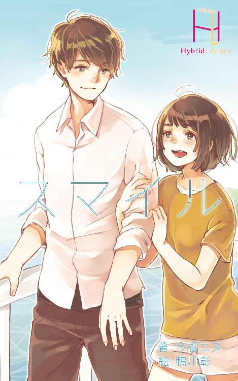

| 私たちのバイクの旅と、ささやかながら与えられた救いについて (Hybrid Library) | |
| 一ノ瀬 芳葵 | |
| Hybrid Library (2016) | |
祖母は、開くたびに広大な世界を見せてくれる辞書のような人だった。
まだ父と母の仲が良く、私が花柄のワンピースなんかを着て無邪気にはしゃぎ回れていた頃のことだ。学校のまとまった休みがあるたびに、家族は東北の祖父母の家に連れて行ってくれた。
東日本大震災の津波で流されてしまったその家のことを、私は時折思い出す。
ちょっと小高い場所にある、海の近くの一軒家が祖父母の家だった。私はその家を「海のおうち」と呼んでいて、出かける時はリゾート地に行くような気分になっていた。
東京の自宅と比べてそこには何も無かった。綺麗な絵の描かれた図鑑もないし、たまに父が触らせてくれたようなパソコンもない。周りも海が見える以外は何もなく、物で溢れたデパートや本屋も見当たらなかった。
けれども、そこには私の好きな祖母がいた。それが私の「休日のリゾート」にとって重要だった。
祖母に会いに行く時は必ず数個の質問を用意していくことにしていた。そうすると祖母は喜んでくれるし、その顔を見るのが私は好きだった。
「何故クモは巣を作るの？」
「どうして人間の赤ちゃんはお母さんのお腹の中で髪の毛が伸びないの？」
「雨の日の夕暮れに空がオレンジで染まらないのは何故？」
控えめに言っても、最低最悪......とまではいかないが、幼い時の好奇心とはこういうものだろう。成長すれば自然にそのままにしてしまう事をわざわざ知りたがる。
そんな質問に祖母は一つ一つ、はぐらかさずに答えてくれた。
父のようにインターネットで検索することもなく、母のように作り話をするわけでもなく（母の話は五歳の私にでも嘘だと分かったので相当幼稚であったのが分かる）、祖母はじっくりと楽しそうに笑って考えて、一緒に問題を検討してくれた。
ある時、私は祖母にとても難しい質問をしてしまった。
「人間は、死んだらどうなるの？ 生きていた時のことを全て忘れちゃうの？」
いつかのテレビ番組で、私は母親を亡くした子供の特集を見た。見終えてから、両親の前で「私は一人でも生きていけるから」とか強がっていたけれど、本当は怖くて仕方が無かった。私が居なくなった後の世界を考えて、恐ろしくなって寝つけなかった。早く忘れてしまえばそれで良かったのだけど、なかなかそういう訳にもいかず、私はつい祖母に相談してしまっていた。
私の相当デリケートな質問を、逸らさずに祖母は受け止めてくれた。ちぢれてしまった白髪を手で撫でながら、まるで明日が世界の終わりの日であるかのように深刻な顔をして悩む。
その日はちょうど小学校三年生の夏休み、それも最後の日だったのを覚えている。東京へ帰る支度を終えて、どこかで祖母が買ってきてくれたラムネを飲みながら風鈴の音を聞き、縁側に並んで座って会話をしていた。
「おばあちゃんは死ぬことが怖くないの？」
「怖いわ。でもね、菜津美ちゃん。私は死ぬことが楽しみでもあるのよ」
「え？」
「死んでしまったら遠くに行ってしまうのは確かね。もちろん生きている人の声は聞こえないし、肌に触れることもできない。菜津美ちゃんは幽霊を信じてる？」
私はそういった現象について早くから疑問を抱いていたので、何度も首を横に振った。
「私も信じていないわ。人間は死んだらそこでおしまい。でもね、決してこの世界と無関係になる訳じゃ無いと思うの」
「どういう意味？ 無関係じゃないって何？」
「幽霊になってこの世界に留まるわけじゃなくて、こうやって菜津美ちゃんの前に姿を見せる訳でもない......。この世界のどこかにきっと居場所があるんだと思うの。死んでしまったら、そういう場所に行く。それが私の楽しみの一つ、かしらね」
祖母の答えは抽象的で理解出来なかった。死んだ後の居場所？ それは一体どういう場所でどういう所なのか？ 天国や地獄とは違うのだろうか......。
私は「天国や地獄に行くって考えているの？」と問いかけると、祖母は柔らかい笑顔で否定した。
「この世界に行くのよ」
「どういうこと？ 意味が分からないんだけど。今私が居る、この、こういう場所？」
私はラムネの瓶を手の中で温めながら、地面を指さして首を捻った。そんな私を見て、楽しむように祖母は頷くのだった。
「菜津美ちゃんのような人と出会えた人間の、全ての救いになるような、特別の場所」
思わせぶりでどこか恥ずかしそうに祖母は言うのだけれど、私には全く理解出来なかった。でも、祖母のその謎かけによって私の「死への恐怖」というものは紛らわされ、やがて人間はそういうものだと受け入れられる年齢にまでなっていった。
相変わらず私は祖母が何を話したかったのか理解出来ずにいる。
今でも時々、私は祖母の夢を見る。今はもう亡くなってしまった、彼女の丸まった背中を追いかける。両手を伸ばして捕まえようとする。大声で「行かないで」と叫ぶ。それでも祖母は私に一度だけ振り返ると、何かに吸い寄せられるように「この世界」へと渡ってしまう。祖母が話していた謎の場所へ。「全ての救いになるような場所」に移る。そこがどこなのか分からないまま、私はいつも夢から覚める。
おもむろに顔を上げると、そこは中学校の教室だった。
誰の姿も無い。夕暮れの真っ赤な光が部屋を満たしている。教室の一番後ろの席に座っていた私は、どうやら最後の授業で寝てしまっていたようだ。黒板の上の時計を見ると、時刻は午後六時に迫ろうとしている。ホームルームどころか部活の時間も終わって、最終下校時刻の間近だ。
私は誰にも話しかけられず、この時間まで寝過ごしてしまったようだった。
咳き込む真似をしてから机の上を片付け始めた。
別に寂しくはないし虚しいと思ったりもしない。中学三年生にもなって一人で何でも出来ないようでは、この先が思いやられる。
帰り支度を終えるまでに、私は祖母との思い出の続きを頭の中に描いていた。
ふと思い出したのだが、一度だけ祖母は私にキャンバスを手渡してくれたことがあった。絵の具で絵を描くために存在するそれは、白い布が板に張られており、小学生だった私の身長の半分程度はあった。
しかし、私は絵を描くのがあまり好きではなかったし、そんな気分ではなかった。子供ながらに気を遣って遠慮した私に、祖母は「真っ白なキャンバス、寂しくないの？」と面白がるように聞いてきた。
その問いかけにどう答えたのかは覚えていなかったが、私はいつまでも「どういう意味の問いだったのだろう」と考えている。死んだ人間が行くと考えていた「全ての救いとなるような場所」と共に、それは祖母が残した大きな謎だった。
それでも、今の私ならキャンバスの質問にならこう答える。
「そもそも白いキャンバスなんてあり得ない」と。
生きていれば嫌でも色は塗らなくてはならない。それを寂しいとかそうでないとか思うのは気分の問題に過ぎない。
今のキャンバスに描かれたのは夕暮れの教室で、私はそれを少しも寂しいとは思っていない。
一月の夕空。
誰も居ない昇降口で、白い息を吐きながらマフラーを口の辺りまで巻いた。肩の辺りまで伸びた、ウェーブのかかった髪の毛を巻き込まないように注意する。寒さに耐えながら校門を出て駅まで歩く。
駅ビルの前を通りかかると、私と同じ制服を着た女子がおしゃべりをして時間をつぶしていた。別の場所では髪の毛を染めたお兄さん達が集まって騒いでいる。彼らを横目に、談笑するスーツ姿のカップルとすれ違う。
控えめに言っても最低最悪だ。馬鹿じゃないだろうか。
これから私が迎える高校受験も大概くだらないと思ってしまうが、ああやってはしゃいで騒ぐ他人を見ても、何が面白いのか理解出来ない。
どうあっても、いつか人は死んでしまう。
楽しく笑って過ごしても、ああいうのを否定して必死で勉強しても、辿り着くところは同じだ。そんな思いは根強く、祖母が亡くなってから残った唯一の道だ。私は疑問を抱きながらでも歩かなければいけない。
駅の構内で帰りの電車を待っていると、遠くから声が聞こえてくる。どこかの政治家が演説をしているようだ。
聞きたくなくても耳に入ってきてしまうその言葉には「震災復興。東日本への支援」といった文言が飛び交う。
その言葉達によって私の心はさらに沈み込んでいく。
あの日、二〇一一年三月十一日。
いわゆる東日本大震災でこの国は多くの命を失った。東京にいた私は、あの日、東北を飲み込んだ津波の破壊力と凄まじさをテレビやネットで何度も見て、人間の無力さを感じさせられた。あの自然災害は私の人生についての考え方を変えてしまった。誰もいつかは死んでしまう。それが分かっているのに、どうして頑張って努力して生きなくてはいけないのか。
祖母なら私に答えをくれただろうか？
私のこの疑問を取り払ってくれる知恵をくれただろうか？
祖母が考えていた「特別な場所」を具体的に教えて安心させてくれただろうか？
祖母は震災の前に亡くなっていたが、もしあの光景を目にしていたら何も言えなかったに違いない。私はそう思い続けている。
いつもの電車で最寄り駅の世田谷まで行く。だが、そのまま自宅には向かわなかった。家に帰れば今日が終わってしまうというのも惜しい気がして、ごみごみした町並みを歩き、ふらりとゲームセンターに入ってしまった。昨日、誰かが惜しくも捕れなかったクレーンゲームのぬいぐるみがどうなったのか、ふと気になっただけなのだ。
それがいけなかった。
「無理だったら良いんだけど、カラオケ興味ない？ お金はこっちが出すからさあ。男二人で行くのも寂しいじゃない？」
どこか別の学校の制服を着た、髪を几帳面に染めてホストの様にセットした男子二人から声をかけられてしまっていた。時代錯誤も甚だしいナンパだ。こんな地味で根暗な女を誘って何が楽しいんだろう。私はジト目で二人を観察していた。
面倒だ。黙って逃げてしまおう。
そう決めた直後、後ろから誰かが声をかけてくる。
「おいおい、君たち。私の彼女に何か用事でもあるのかな？」
彼氏気取りで私に近づいてきたのは、黒いモッズコートにジーンズを履いた年上の女性だった。大学生くらいだろうか。髪の毛を後ろで折りたたんで簡単に留めており、ラフな印象を与えている。
私はその女性の登場に混乱してしまった。ある意味、男子二人のナンパよりも異常な事態だった。
「......ねえ、どうして彼氏のフリ？ 私、女の子に見えないかな。それともあんた男なの？ 違うわよね。おかしくない？」
「うっ」
私が困っていて助け船を出してくれたのは分かっていたが、つい相手のやり方にダメ出しをしてしまった。
「うむむ......」
その女性は呻きながらたじろいで、それから偉そうに咳払いをする。気を取り直したようだ。
この人は一体何者なのか。
ここにいる誰もが「この先どうなるんだ？」という疑問を抱えて沈黙していた。その人はさらに言い直す。
「もうー、菜津美ちゃん、だめじゃない、お姉ちゃんからはぐれちゃ。ごめんなさいね、うちの妹が」
「いや、私一人っ子だし」
「ど、どうして話を合わせてくれないのですか......？ こういう時は気を利かせるものでしょう？」
「はあ？ 知らないわよ。こっちの家族構成をねつ造する方が悪いの」
私が呆れ半分で非難すると、女性は難しい顔で何かを考えだした。何なんだろう、この人は。そうして、やがて答えが見つかると表情を明るくして人差し指を立てた。
「もう、心配したわよ。お母さん、探したんだから。夕ご飯だから帰りましょうね」
「ちっ......怒るわよ？」
「ひ」
しまいに母親を名乗った女性は、私の鋭い目つきと舌打ちに萎縮して泣きそうな顔になった。
一体何が目的でこの人は私に近づいてきたのか。何気に私の名前を知っているのは何故なのか。
気が付くと、そんな謎の女性と私の前から、ナンパ少年たちは消えてしまっていた。まあ、そうだろう。私が相手の立場でもそうした。こんな茶番に係わっているよりも、そのままカラオケで盛り上がった方がまだマシだ。それにしても、気心の知れた二人で行った方が絶対に盛り上がると思うんだけどな。私なんて地味な子を誘って気を遣うよりもずっと。
結局、私とその謎の女性は一緒にゲームセンターを出た。彼女は私よりも頭一つ分ほど背が高い。横顔が雑誌のモデルみたいに綺麗だった。もし、この人が一人でゲームセンターに入っていたら、ナンパされたのは私ではなかったに違いない。
先程から何か話しながら笑っているが、私が男だったなら確実に虜になっていただろう。地味なコートとジーンズではなくて、もっと清楚なワンピースを着てちゃんと化粧をすれば、お嬢様っぽくみえるはずだ。見た感じ、化粧は必要なさそうな肌だけど。
そんなことを思いながら、私は彼女の顔を見つめて歩いていた。すると、私の視線に気づいて彼女は気まずそうになった。
「やっぱり、おかしいかな......私の話。そうよね。信じてくれなくても、無理はないと思う」
「えっと、ごめん。全然聞いてなかった」
私は素っ気なく前を向いて歩く。発した「ごめん」なんて言葉にも、誠意があるわけではない。
「そう......ごめんね」
対して、あちらの謝罪には申し訳なさが詰まっていた。
「そ、そうよね。自己紹介からきちんとするべきだったわ。私は奥森加菜。菜津美さんのおじいさんのことで訪ねてきたんだけど」
相手の名前のことはどうでも良かったが、後半は私にとって聞くに値する事柄だった。ちらりと視線を向ける。すると、加菜と名乗った女性が饒舌になった。
「私、あなたのおじいさんと文通をしててね、それで最後の手紙から今日までずっと気になることがあって、それで、あの、でも勇気が無くて確かめられなくて、それでもこのままじゃ駄目だって思ったから......」
「文通？ 手紙よね？ 便せんに文字を書いて、それを封筒に入れてシールとかのりとかで閉じて、切手を貼ってポストに入れるやつよね？」
「そう......なのだけど」
自分は何か悪いことをしてしているのだろうか、と不安になったような顔をしていた。私は何だか加菜をいじめているような気がしてきてしまって、微かに罪悪感を抱く。
「古い」
今は二〇一五年の一月だ。メールだってＬＩＮＥだってスカイプだってある。昨日もＣＭでやってたけど、指定した相手とは無料で通話出来るような携帯の料金プランもある。
「さっき菜津美さんのお母さまにも同じこと、言われたわ」
どこか照れたように加菜は笑顔を見せる。
「家にはもう寄ってるんだ」
「うん。それで菜津美さんの帰りを待たせてもらってたんだけど、少し遅いからちょっと捜してたの。受験生だから......その、色々あると思って。遅くなる理由、色々」
先ほどゲームセンターにいた私を正当化してくれようとしているのだろうか。「受験生だからハメを外したい時もある」みたいなステレオタイプに勝手にはめ込んで......そんな人間に私はここのところ控えめに言って最低最悪な印象を抱いている。
いいや。この人の話は帰ってから聞こう。
それから私は何の言葉も発しないまま、家までの道のりをひたすら歩くことにした。
「あの......」
こっちは話しかけられたら答えるつもりでいたけど、加菜は私が何も尋ねないので何を話して良いか分からないようだった。気まずそうについて来るだけだった。
家が見えてくる。築十二年の一軒家だ。私が生まれた後に建てたらしいが、その前はどこに住んでいたのかを知らない。ここではないどこからしいが記憶はない。
家の門の近くに、大型の黒いバイクが駐めてあるのが見えた。まさか、この加菜の他にも来客がいるのだろうか。考えられる。こんな小心者の女性一人で、見知らぬ人の家に来られる訳がない。きっと同伴者がいるのだ。
揃って家に入ると、加菜は「再びおじゃまします」と小声で言って靴を綺麗に揃えていた。私はそれを待ってから、居間の母に顔を見せる。後ろから加菜は「遅くなりました」と告げて恐縮していた。
畳に座っている母は、帰宅した私たちに関心を向けてはくれなかった。机に広げた手紙を読みふけっていた。一心不乱だ。目の前のこれが何なのか、私は瞬時に理解出来た。加菜が祖父とやり取りしていたという手紙だろう。
「ねえ、おじいちゃんのこと、どうなの？ 本当なの？」
私が荒々しく尋ねると、そこで初めて母は私たちに気がついて「帰ったのね」とどこかぼんやりした様子で呟いた。
「手紙はみんな、確かにおじいちゃんからのものね。色んなことが書いてある......色んな......」
口元を押さえて母は目を見開いていた。
「知らなかった。こんな人だったなんて。おじいちゃんは自分のこと、全然話してくれなかったから」
母は動揺している。その手紙がどれだけ雄弁に祖父を表わしているのか、手をつけていない私には分からなかったが、少なくとも私より長く時を過ごしていた母がこれだけ驚いているのだ。きっと私の想像を越えた祖父の姿が文面にはあるのだろう。
私もカバンをその場に置いて、手紙を拾い上げてみた。
祖母が重要な人であったのに対して、祖父は全くそうではなかった。近寄りがたい雰囲気があって、滅多に何も話してくれない人だった。だから、嫌っていた訳ではないが、私は子供心に「怖い」と思ってしまっていたのだ。
あれは、私が初めて祖父に会った時だ。幼かった私は、一目祖父を見て、森から出て来た怪物だと勘違いした。ぎらりとした目つきは恐ろしく、動きののっそりしている様子が不気味に思えた。
だから私は、祖母を目当てにして祖父母の家に行っていた。祖父のことは出来るなら意識したくなかった。会話をした回数も限られているし、内容は覚えていない。声の感じは、祖母と話している場面をよく見ていたから記憶していた。野太く力強い響きだった。
祖母が亡くなってから、私たちは祖父のみを訪ねるということはしなかった。
私たちの間には、数年間の断絶した時間があったことになる。
それから祖父が記憶に出てくるのは、二〇一一年の春になる。
あの東日本大震災の津波によって、祖父は亡くなった。
四年前、あの震災があった時、私は自分の部屋で文庫本をめくっていた。図書館から借りた、梶井基次郎の『檸檬』だ。ぼんやりと文章を眺めていると、突如、長い揺れが連続して私を襲った。その時、私は「ああ、とうとう関東大震災みたいな地震が来たのだな」と思っていた。当時から「近々、首都圏を大きな地震が襲う」という情報は流れていたし、私はそれを受け入れていた。長きに渡る揺れによって部屋のペン立ては倒れて、高い所にあった本が次々に落ちてきたが、ベッドの下に逃げた私は無事だった。それからテレビの臨時ニュースで、その地震の震源はここではなくて東北の方だと知ったのだった。さすがに、交流はなかったとは言え、私は祖父の安否を気遣った。
祖父についての情報は数日間得られなかったが、現地の消防の人から電話がかかってきて、私たちは祖父についてを知ることになる。
祖父は家と一緒に流されてしまった、と。
だが、結局私たち家族は、現地が混乱していることを理由にして、東北へと行くこともなかった。その後も様々な情報が流れ、その全てが私たち家族を東北から遠ざけるのに使われた。要するに目を閉じて耳を塞いだのだ。
そうやって、半ば無視するような形で、私たちは四年という歳月を過ごしていたのであった。
だが、ここに来て、祖母を失ってから津波で亡くなるまでの祖父の時間が、手紙という形で私たちの前に現われた。
ある手紙では加菜が受けていたいじめについてのアドバイスが書かれており、またある手紙では彼女に本を薦める姿があった。芥川龍之介、菊池寬、佐藤春夫。それらが加菜の青春を形作ったのだろう。びっくりしたが、私もそれらの本を大体読んでいて影響を受けていた。その偶然に私は少し気味が悪くなる。
「こんなもの、今更よ。どうして今になって持ってきたりしたのよ。四年間、ずっとこれを家族である私たちに返そうと悩んでて、ようやく今になって決心がつきましたって訳？」
私は敵意をむき出しにして言ってしまった。
だが、加菜は落ち着いた様子で首を横に振る。そして、綺麗に膝を折って正座をして私たちを交互に見た。
「悟郎さんと最初に手紙のやり取りをし始めたきっかけは、花の苗についてでした。悟郎さんはある花を欲しがっていて、でもそれがどこにも見つからずに困っていたそうです」
「何？ お花屋さんでもやってるの？」
そう私が言うと、何と説明したら良いか迷っているのか視線を泳がせていた。話しにくそうだった。
「違うんです。その、私の家があるテレビ番組で取り上げられまして、その時、偶然、悟郎さんが求める花が映ったようなんです。お庭の映像の時に」
「あなたの家、テレビに映ったの」
母は読んでいた手紙を置いて驚いたような声を出すが、またすぐに別の手紙に手を伸ばしていた。
「はい......その......たまたまうちの家がテレビ局の目に止まったらしく」
うつむき加減で加菜は恐縮したように話す。
つまり、それだけ立派で大きな家に住んでいるということなのだろう。加菜はそれを謙遜したいらしいが、その態度が私にとっては逆に気に入らなかった。
「それから、頻繁に手紙のやり取りをするようになりました。お花の苗を贈った後、その後の経過を教えていただいたり、育て方に助言をしたり......それ以外にも色々なことを書くようになったんです。......あの大震災の日まで」
加菜がその言葉を口にすると、母の手が止まった。
それから何かを思いついたらしく、ここにある封筒の切手部分、つまり消印を確認し始めたのだ。一つ確かめては別の封筒を手に取る......それを繰り返してやがて目当てのものにたどり着いた。私も母の後ろからその一通を覗き込んでいた。
「そうです。文通の最後の手紙です。読んで頂けますか？ 私がここに来た理由なんです」
加菜の言われるがままに、祖父が生前最後に出したと言われる手紙を読み始めた。
それは他愛もない天候の話から始まっていた。それから、加菜の学校でのテストの話になった。便せんが母によってめくられていくのを見つめて、私はもどかしさを覚えつつも内容の核心部分にたどり着くのを待つ。そして文面の最後で気がかりな記述が現われた。
「『とても大切なことを、あなたにお話ししておきたい』......？」
そう記してあった。
私と母は顔を見合わせる。お互いに見当もつかないという表情をしていた。
「その手紙が来てから、私は二日後にお返事の手紙を送りました。三月の五日です。悟郎さんからの手紙は......来ていません。いつも返事が来るのは不定期でしたから、二日後に来る時もあれば、四日後に来る時もありました」
そこまで言ってから加菜は私たちの表情を窺って、一つ息を吸うと、視線をまた伏せる。
「私はその悟郎さんの『大切なこと』が何だったのかを知るために来ました。私に何を伝えたかったのか......。そして、こちらにそのお手紙が来ていないか。ですが......どうやら」
加菜の声が萎んでいく。
私たちはその時、すでに顔で返事をしてしまっていた。
そんなものは知らない、と。
加菜はしばし落ち込んだ様子だったが、気持ちを切り替えたのか、顔を上げて力なく笑うのだった。精一杯、失望を隠しているのが私には分かった。
熱心に母は手紙に目を通していた。私も祖父という人物にちっぽけながら興味を抱いていたから、適当なものを選んで読み始めた。しかし、二通目の途中で止めてしまった。ここにある言葉はどれも私に向けられたものではないと気づいた時、途端に気持ちが冷めてしまったのだ。それと同時に嫉妬の感情が沸き上がってきた。何もかもが気に入らなくなってしまった。
とにかく、加菜の『大切なこと』を探すという目的は果たされなかった。彼女はすぐ別の手がかりへと気持ちを切り替えるつもりだったのだろうが、その一歩を止めたのは母だった。
今夜は加菜を家に泊めるというのである。
はるばるバイクでここまで来てくれたこと、例えバイクとはいえ夜道を女の子が走るのは危険だということ、さらに先ほどから降り出した雨が母の提案を採用するように後押ししてきた。
私は加菜を危険の中に放り出したい訳ではなかったが、提案には反対だった。そもそも加菜が気に入らなかったし、これ以上一緒に居ると気分が乱れる気がした。
しかし、手紙を読みふけっている母を見て、「加菜を泊めるのは、一通でも多く手紙を読むためなんだ」と分かってしまった時、もう何も反論が出来なくなった。しぶしぶながら賛成するしかなかった。
加菜は丁寧すぎる程に膝をついてお礼を言い、下げた頭を畳にぶつけていた。それに私も母も驚いてびくりとしてしまう。何故か本人も飛び上がって驚いていた。
バイクを雨から守るためのカバーを掛けに行くらしかったので、私も一緒に外へ出る。
家の前に駐められていた真っ黒で大型のバイクは、加菜の同伴者のものでもなんでもない。彼女のものだった。華奢で箱入り娘という印象の加菜には、到底似合わない代物だ。
「そのバイクってさ、名前とかあるの？」
私は壁に寄りかかりながら気だるげに尋ねた。女の子っぽく、何にでも自分の好きな名前を付ける人なのかと思っていたからだ。そういう人種を私は軽蔑していたが。
「え？ はいっ！ ありますよ。素敵なお名前」
「ふうん」
「ＶＴ７５０Ｓです」
私は予想とは違ったその答えに、表情を固まらせる。対して、加菜はよくぞ聞いてくれましたと言わんばかりにバイクの車体を撫でて説明をし始めた。その目の輝きは、女子のかわいいものを見る時のものではなく、男子のカッコいいものを自慢する時のそれだった。
「ハーレーをモデルにしたスポーツタイプのＨＯＮＤＡの傑作です！ 特にこのＶ型エンジン。この音と重量感がたまらないんです」
そう言いながら、座る部分の下に付いている銀色のＶ字のパーツを、繊細な指で撫でながら説明してくれる。私は黙って聞いていたが、そのまま聞いていると完全に夜更けになってしまうし、それに雨も降ってきたので話の途中で家に入ってしまった。慌てて加菜もついてくる。
「興味ありませんでしたよね、ごめんなさい......つい人に話したくなってしまって......」
そう謝罪しながら私の顔色を窺ってくる加菜を、二階の自室に案内した。
お世話になってばかりで悪いということで、加菜は何かを手伝おうとしてくれた。
加菜は料理ができる。しかし、私もできた。どちらが作るかで揉めたが、結局二人で協力した。認めたくないが、二人でやった方が格段に楽だし早かった。母と三人でそれを食すると、交代でお風呂に入る。それから、私はベッドのそばへ、余っていた布団を敷いた。そこで加菜に寝てもらうことにした。
全てが落ち着いたのが午後十一時で、私たちはまだ寝るには早いという雰囲気から、少し話を始める。私にとって加菜は気に入らない存在だったが、料理を一緒に作ることによって、全く話す価値のない人間でもなさそうだというのが分かってきた。
「あ、芥川ですね！ 菜津美さんも読まれるんですか？ 本もたくさんです。読書、好きそうですね」
先に話しかけてきたのは加菜だった。どこか無理をしているような話しぶりだ。きっと普段から誰とでも仲良く接しようと努めているんだろう。
「......人の本棚、勝手に見ないでよ」
「ご、ごめんなさい。とんだ失礼を」
「ちょっと教科書で知ったから続きも読んでみたくなっただけ。それだけだし」
私は本棚を見ながら少しだけ嘘をついた。きっかけは教科書だったが、それから知らず知らずのうちに多くの本を好んで読むようになっていたのだ。それは祖父の影響もないではないが、今日、加菜に出会って、彼女が読んでいる本の数々を知った。もしかしたら私の好みは、祖父譲りのものではなかったのか。そんな疑いを抱いた。
私が注意をしてから、すっかり加菜は緊張してしまったらしい。黙ってしまった。布団の上に正座して固まってしまう。私はため息をつく。
「あなたのバイク......ＶＴ？」
「ＶＴ７５０Ｓです」
「う、うん」
「ＨＯＮＤＡです」
淀みなく答えてくる彼女に、私はうんざりしたように頭をかいた。
「何であんなに大きいのに乗ってるの？ カッコつけてると思われるわよ。それともそう見られたいとか」
「そ、そんなこと、ないです。あの......大は小を兼ねるって言うじゃないですか。だから、大型二輪から順番に取っていこうと思ったんです」
「何それ。一番難しそうなのから取ってどうするのよ」
「ごもっともです。迂闊でした。途中、何度も挫折しかけましたもの。お陰で四年もかかってしまいました」
普通は諦めそうなものだけど、と私は思いながら、まだ緊張気味の加菜を見ていた。髪を下ろした彼女は女の私からしてもドキリとしてしまうくらいの綺麗さだ。ちょっと癖のある性格に、理解しがたい動機、そして根性。これは男にモテそうだと予想をする。男は皆、こういうギャップがあって、さらに男の趣味を理解してくれそうな子が好きに決まっている。
「加菜は彼氏とかいる？」
「ふぇっ!? どうしてここでその質問が出てくるんですか！ 言っておきますけどね、私、全然人気がないんですからねっ。男の子からも女の子からも」
「うーそーだー」
私は細目で疑いの視線を向ける。
「生まれてこの方、付き合った男性もいませんし。モテないんです。誰からも避けられているんです」
何だか寂しそうな笑顔を見せる。だが、私は、それは加菜に人気がないのではなくて、あまりの美しさや高貴さに近寄れないからだろうと推測する。そうでないと納得が出来ない。
そんなことを考えながらじろじろと加菜を見回していたが、それも飽き、私はベッドに寝転んだ。
「あなたが行こうとしている場所。もう津波で何も残ってないわよ」
「......はい、インターネットで住所を調べて、その辺りの写真を見ました......。本当に痛ましいです」
「痛ましいとかそういうのは良いけど、そこに行ってどうするのよ。おじいちゃんの書いていた『大切なこと』を記したメモが地中から発掘されるかも！ とかそんなＲＰＧみたいな展開を期待してるわけ？」
私は茶化すように言った。
しかし、加菜は真剣な眼差しを逸らさなかった。しばらく黙って何かを考えてから、熱っぽく語ってくる。
「......あなたのおじいさんが仲良くしていた人なら何か知っているかもしれません。何かの手がかりを耳にしていたとか......」
「それには期待出来ないと思うけど」
「どうしてそう言い切れますか？」
強気で健気な顔をして迫ってくる。私は唇を尖らせた。その態度が気に入らない。単なる嫉妬だが、それは気にせずに感情のままに体を起き上がらせると、彼女に顔を近づけて諭した。
「おじいちゃんは、極端に人付き合いを嫌ってた。だから知り合いなんてあの場所には......」
そこまで言って私は気がつくことがあった。祖父の姿とあの東北の家を思い出した時、記憶に引っかかるものがあった。
祖母のお葬式の時だ。
私が十歳の頃、祖母は肝臓の病気で亡くなった。その年の前年に遊びに行ったきり顔を見ておらず、久方ぶりに対面した祖母は人形のように動かなくなり、顔は不自然に白かった。彼女は棺桶の中でお花に飾られて、そのまま火葬され、そして真っ白な骨だけが残った。小さな壺に詰められてから、そこでようやく十歳ほどの私は「祖母の死」という事実に胸を貫かれた。
葬儀場から、一旦東北の祖父母の家に戻ったのは夜だった。私は家族に隠れて泣いた。通夜から式の間に我慢していた涙は、祖母を送り出したと分かると止めようがない程あふれ出してきてしまった。嗚咽も抑えきれずに漏れ出していた。喉の奥が切なくて、目頭はじわりと熱っぽくなっていた。
泣いている自分が恥ずかしくて、私は祖父母の家の裏に逃げ込んだ。手の平で涙を顔にすり込むようにして涙を処理し続けた。
すると、礼服姿の祖父が隣にやって来た。私を捜しに来たというより、こちらと同く、皆から逃れる場所に来たというだけ。祖父は声もかけてこなかったし、私を慰めなかった。ただ頬を緩めて「これで、ようやく......」と一人で呟いていた。真っ暗な空に向かってそう口走る。
あれは結局何だったのか？
私の中で疑問が膨れ上がってきた。
「ようやく......」。そこに続く言葉は何なのか。祖母がいなくなってから祖父にやるべきことが出来たのか？
そこまで想像して、加菜と二人でいるこの部屋に意識を戻すと、私の中に一つの可能性が生まれていたのに気づく。
『祖父が明かそうとしたのは、祖母のことかもしれない』
私はそう期待して確信する。あの、尊敬するべき祖母の隠された真実かもしれない......。だが、もしかすると、不貞の数々を詫びる気持ちがあったのかもしれない。
どちらにしても祖母にかかわることだ。間違いない。
「おじいちゃんの『大切なこと』、ちょっと分かってきたかも」
「え、思い出して下さったんです？」
「控え目に言って推測。きっとおばあちゃんのことについて書こうとしたのよ。だって、おじいちゃんは生前、ほとんどおばあちゃんについて語らなかったんだもの」
「......言われてみればそうですね、おばあさんの存在は知っていましたが、ほとんどどういう人かは」
「ひょっとするかもしれない」
私は祖母のことを十二分に知っていても、過去の祖母のことは何一つ知らなかったのだ。しばしば疑問に思うこともあるが、それを尋ねる前に彼女は亡くなってしまった。なので、祖母のことであれば私はこの上なく知りたかった。それに、もう一つ、もしかしたら解消されるかもしれない疑問がある。
よく夢に出てくる祖母が話す、「死んだ人間の行く場所」だ。結局あの謎を、彼女は私に話さないまま亡くなってしまった。祖父には託していたのかもしれない......。可能性は低く見積もってみるが、それでも私の長年のモヤモヤを解消するのには渡りに船だった。
ベッドから飛び出さんばかりの勢いで、顔を加菜に近づけた。
「ねえ、私も同行させてもらうわよ。嫌と言っても頷かせるから。控えめに言っても役に立つこと間違い無しなんだから！」
明け方には雨音も聞こえなくなり、加菜は東北に向けて出発することになった。
恐らく夜を徹したのだろう。母は祖父の手紙を既に読み終えていた。それを彼女に返すと慣れない様子で礼を述べた。
今日は土曜日で、本来ならば午前中のみの授業があるのだが、三年生は今週から「各自勉強しろ」ということで、土曜日は全て休みになっている。私もその対象だったので、母と一緒に加菜の出発に立ち会えた。
だが、ただ黙って加菜を行かせる訳ではない。昨夜決意したことを母に打ち明ける。
「私も加菜についていこうと思ってる。この旅で何かが見つかるなら、きっとおばあちゃんのことだよ。私、おばあちゃんのこと、もっと知りたい」
小声で訴えるが、母の表情が困った娘を見るものになって、私の言葉は徐々に鈍ってきてしまった。
「やめておいたら。加菜さんに任せなさい。分かったことがあったら、それから知らせてもらえばいいじゃない。ねえ？」
話を振られた加菜は一瞬だけこちらを見てから頷いて、小さく「それが最善かと」と返事をする。私は奥歯を強く噛んだ。
それから加菜は母に見送られて外に出ていくが、私もサンダルをつっかけて一緒に歩いて後を追う。そして、体を密着させて母に聞こえないように小声で話しかける。
「私は祖父を亡くした家族よ。そういう人間と一緒なら、向こうでも色々と融通が利くと思うけど？」
「そういう打算的な考えで連れて行くつもりはありませんから」
きっぱりと加菜が言い放った。ここまではっきりと何かを主張する彼女を見たのは初めてだったので、私は戸惑って慌ててしまう。そんな私にさらに加菜は告げた。
「こんな、あてもない旅につきあう必要なんて無いですよ。受験生は勉強、です。お母さんの言うことを聞くのが一番だと思う」
「じゅ、受験なんて......！」
私は声を荒げそうになるものの、直前で押さえた。母に聞こえたら何を言われるか分からない。
歯がゆかった。受験という理由が、全ての行動を押さえつけようとしてくる。それが控え目に言って最低最悪のストレスになっていた。あらゆる動機が受験に回収されていく。中学校三年生の女子は、そんな便利な存在じゃないのに。
でも、私は引き下がらない。
コートを脱ぎ、バイクスーツ姿になっていく加菜の腕を強く捕まえた。
「お願い。今日の夜まで待って。母親は必ず説得してみせるから」
加菜の目を見つめ続けると、彼女は困った顔をして固まってしまう。だが、最終的には首を縦に振った。
加菜がバイクから雨よけのカバーを外すためにしゃがむと、私も同じようにして膝をついた。
諦めたくはなかった。祖母の残したあの言葉の意味が、もしかしたら分かるかもしれない。私にとってこの事柄は、忘れてしまったものではなく、泣く泣く先送りにしたものだと徐々に分かり始めてきていた。それほどまでに私はこの謎に突き動かされている。
「私、おじいちゃんのこと、何も知らないの。津波の後は一度も向こうへ行ってない。行けなかった。でも、あなたが来てくれて初めて行きたいって思えたから......だから」
熱心に説得するあまり、嘘をついてしまった。津波の後、私は行こうと思えばいつでも行けたのだ。ただ、自分とは関係が無いことにしたくて遠ざけていたのだった。
私の嘘が、加菜のお人好しな部分を突いていたのだろう。熱心な瞳に負けたと言わんばかりに、うつむいて小さな声で話し始めた。
「今日はね、買い物の日。元々すぐに出発する気は無かったの。......独り言、だけどね、今日の日付が変わる頃に世田谷の駅から出発するつもり」
加菜はそっとささやくと、バイクからカバーを外し始めた。付着していた雨水が足下に次々と落下して跳ね上がった。
すぐに加菜は後悔した顔になった。取り外したカバーを見つめて何かを考えているようだった。
水をきったカバーを後部座席の下にしまうと、加菜はバイクに跨がってヘルメットをかぶった。家の玄関の所にいる母親に手を振って挨拶をした。それから私には見向きもせずに走り去ってしまった。
彼女の出発後、母が話しかけようとしてきた。だが、私は無視をしてそのまま二階へと上がる。決意を込めた足取りだったのだが、きっと母には怒りを表現しているようにしか映らなかっただろう。
でも、私の心にはどんな怒りの感情もありはしない。冷静な心と、自分が成すべきことを成せなかったらどうしようという不安だけがある。
日付が変わるまでに世田谷駅に行けば、加菜と東北に行ける。
受験勉強なんてどうでも良い。こんなものが私の人生を左右するなんて実感は全く無いし、頑張ったところで何も変わらないのだから。
けれど、怖いのは、この旅がまるで徒労に終わったり、私の望む結果以外のものが出てきたりするかもしれないという点だ。
祖父は加菜のことが好きだったとか、祖母を心から愛していなかったとか......。そんな告白が見つかってしまったら後悔しかないだろう。その可能性を考えると私の足は鈍ってしまう。
もっとよく祖父を知っていたら、判断のしようもあっただろう。
しかし、私は祖父を知らない。
それでも今ここで、祖母との繋がりを消したくはなかった。いつまでも、祖母の背中を追い続ける夢を見たくはない。この世界にあるという「死んだ人が行く世界」とやらの謎も解かなければならない。そのために私が出来ることは今、確かに存在するのだ。
旅に必要だと思われるものをリュックに詰めていった。半年前の修学旅行で用意したものを参考にして、丁寧に中身を差し込んでいく。下着は薄くなるように畳み、最低限の着替えも同じくコンパクトにする。予備の歯ブラシと歯磨き粉。生理用品。スマホの充電器。それから折りたたみの傘。あまり重くなりすぎても良くない。私は出来上がった荷物を背負って一度、二度、と跳ねてみた。
そこで私は他にも用意しなければならないものがあるのに気づく。
台所にいた母に「ノートを買いに行く」と受験生らしい嘘をついて、外に出た。向かったのはホームセンターだ。そこで一番安いバイク用のヘルメットを買った。あのバイクに二人乗りをするならば必要だ。クリーム色でとりあえず頭だけ守るような形状のものだ。
帰り道、誰にも見られていないことを確認して、買ったばかりのヘルメットをかぶったり脱いだりしてみた。私の軽くウェーブがかかった髪型も形崩れはしない。買い物が失敗でなかったのを喜ぶ。
そのヘルメットは玄関の植え込みに隠しておいて、何食わぬ顔で家に帰った。そのまま夜まで勉強をするふりをして待つ。
模範的な受験生の、いつもと同じ一日を過ごす。そして夜になり、時計が午後十一時に近づくという時になると、私は気合いを入れて立ち上がった。
家を抜け出すのは簡単だ。何故なら今、家に母親は居ないからだ。水商売をしている母の主な勤務時間が夜だから、家はもぬけの空になる。私は一階に降りてキッチンで水を一杯飲んで心を落ちつける。誰も居ないリビングは深い谷底のように真っ暗で、時計の音は私の鼓動についてきていた。何故か足が重くなったが、目を閉じて最初の一歩を踏み出す。あとは「為すがまま」だった。
家の鍵を閉めて、玄関に隠したヘルメットを回収すると、夜の住宅街を世田谷駅に向かって歩き出した。
こうして私の旅が始まる。
この瞬間、何もかもから解き放たれたような気がして、上機嫌で世田谷の街を闊歩していた。
「何度も言わせないでくれるかしら。私の粘り強い説得で母親はオッケーしてくれたわ。快くね」
私は加菜の疑心暗鬼な表情に苛立ちながら言葉を放つ。それでもまだ加菜は納得していない様子だった。
あれから私たちは世田谷の駅で落ち合った。そのまま無言で加菜は私をバイクの後ろに乗せてくれて、一般道から常磐自動車道に入ってそのまま北上した。
だが、パーキングエリアで休憩となった時に加菜は「やはり納得出来ない」と私を問い詰めてきたのだ。パーキングエリアでは店は開いておらず、自販機と椅子と机、それからＮＨＫのニュース番組が映るテレビがあった。私たちの他に利用者の姿は見当たらない。時刻は深夜一時頃だ。真夜中のパーキングエリアには非日常的な雰囲気があり、私は高揚感に包まれていた。
私と加菜はエリア内の座席に向かい合って座った。自販機で買ったホットコーヒーを飲みながら、前述の会話をする。
「それなら、ご自宅に電話をして確かめてみても良いわよね......」
「すとーっぷ」
私は手を出して制し加菜を睨む。スマホを構えた彼女はおどおどしつつも確認を取ろうとしていたが、しばらくすると、そのままカバンにスマホを戻してしまう。
「お恥ずかしながら、あなたの家の番号、知りませんでした......」
その落胆ぶりに私はくすりと笑ってしまう。
「あの、良かったらでいいんだけど、その......あなたの家の番号、教えてもらってもいいかしら？」
「あのね、教えるわけないでしょーが！」
「ですよね......」
と、ますます落ち込む加菜だった。このように彼女は肝心なところが抜けていた。バイクの運転にしても「任せていて大丈夫なのか」と不安になったが、他に運転出来る人間はいない。しょうがない。
加菜は物憂げな顔（恐らく私から番号が聞き出せなくて落ち込んでいる表情）をして、外を眺めていた。その佇まいがやけに格好良く映った。私はコーヒーをすすりつつ見入ってしまっていた。ぴっちりと体に密着したライダースーツに、控えめだが形の良いバスト、理想的なウエストとヒップ......見つめるたびに腹が立ってくる。
それに引き替え、私の体は子供っぽくて服も同じくそんな感じで嫌になってくる。
「これからのことだけど、手がかりはもちろんあるんでしょうね。どこに行くつもりなの？ まず目的地に入ったら！」
「え？ ......あ、はい。ちょっと待ってくださいね。まずはこれを......」
ボーッとしていた加菜はバッグから地図とノートを出して見せてくる。旅の行程表のようなものらしい。訪ねるべき場所が地図に書きこまれて、尋ねるべき人間の情報......住所や電話番号や職業がノートにまとめられている。またしてもアナログだ。スマホでそういうアプリはないのかしら。
「ここ、ここに行くつもりなんだけど」
ちょんちょんと場所を示されただけだったので、私はため息をついて、そこが一体どこなのか地図を手元に引き寄せて確かめてみた。
地図にカラーペンで印がついていた。その部分と対応するようにノートには情報が記されていた。そちらも確かめる。
どうやら「民生委員の角田さん」という人の所らしい。民生委員とは何なのだろうか。聞いておこうとも思ったが、何だか知らないのが恥ずかしいことであるような気がしたのでやめておく。あとで自分で調べよう。
とりあえずの目的地は分かった。
私たちはそれから交代で机に突っ伏して睡眠をとってから、パーキングエリアを出発する。徐々に人が集まり始めていた。
常磐自動車道をさらに進んでいくと、辺りが明るくなってきていた。
私は加菜の背中越しに前方の風景を見る。
まるで幾つもの丘の間を道路が通っているようだった。背の低い丘が並び、ガードレールの外側には低木が植わっている。途端に都会から離れた印象を抱いた。
夜が明けつつある東北の空は広く、紺と紫の中間程の色をした夜明け前の空模様は、まるで旅の幕が上がる演出のようにも感じられるのだった。
ただ、一月の東北地方の気候は私にとって未経験だった。いくらコートを着ているとは言え、バイクの後ろにしがみついていると冷たい風が吹きつけてくる。控えめに言って最低最悪な寒さを味わうことになった。
常磐自動車道を降りたけれど、私はいよいよ東北に来たという実感を得られなかった。幼い頃、何度も来ているはずなのに。
道を走っていても更地ばかりが広がる。道の先には、さらに道が見えていた。時折建物が目に入るけれども、それはもう打ち捨てられて残ったままの建造物であり、人が利用している様子はない。
人の気配がまるでない。
時折すれ違う車が、かろうじてこの地に私と加菜だけでないのを教えてくれていた。
だから、しばらく車とすれ違わないと、耳に残るのは風を切る音だけになる。
私は海岸線を見ていた。辺りの土地はほとんど瓦礫も取り除かれて真っ平らな土地になっており、道路から海までは距離があるけれど、遮るものがないので見渡すことが出来る。ここを津波が襲ったと考えると寒気がした。
この平地には何かが存在したわけで、今はその爪痕さえも残っていない。綺麗に掃除された大地があるだけだ。
虚しいような悲しいような感情を抱いていると、コンビニの駐車場にバイクは入っていった。ここに来て初めて見かけたコンビニだ。
休憩でもするのかと思ったが、加菜はヘルメットを取ると申し訳なさそうな声で「ごめんなさい。どっちに行ったら良いか分からなくなっちゃった......」と地図で確認をしだした。
ネットで調べればすぐなのに。
私はそう思いながらすぐさまポケットからスマホを取り出した。ただし、調べるのは場所じゃない。これから向かう人の職業についてだ。
案の定入っていた母親からの着信履歴を無視し、「民生委員」について検索し始めた。
色々と難しいことが出てきたが、要するに一人暮らしの老人の所を訪れて様子を見る、市町村から依頼を受けて働く人のことらしい。奉仕者と書いてあったのでボランティアに近いんだろう。一応、活動費としてお金はもらえるらしい。それでもやっぱり好きでなければ出来ないような仕事で、私としてはどうしてこういうことに力を入れられるのか理解出来なかった。こんなことをしてどうするというのか。
「ごめんなさい、待った......よね。道分かったから、急ごう？」
加菜が地図をしまってバイクに跨がると私も彼女の体にしっかりとしがみついた。
これから訪ねる角田という人とはあまり気が合いそうもない。私はそう思いながら加菜の腰を抱きしめていた。
バイクは細道に入り、そこからさらに坂道にさしかかった。私はしがみつく手に力を入れた。角田さんの家は高地にあるらしい。ぐるりと丘の上を回るように登っていくと、住宅の密集している場所が見えてくる、そこで初めて私は東北に来たという実感を得ることが出来る。私の覚えている、懐かしい東北だ。
角田さんの家にたどり着いて近くの塀にバイクを立てた。早速加菜はインターフォンを鳴らそうとしていたのだが、立ち止まってしまっていた。
「ど、どうしよう......まず、何て話せば良いのかしら。何から話した方が良いかな。どこから説明したら一番かな」
こんなのでよく私の家にやって来られたものだと呆れるが、私の時は「祖父の手紙」があったから勇気が持てたのかもしれないと考えると、まあ、仕方が無いなと思う。
私は背を押してやることにした。
いきなり加菜に近づいていってインターフォンを押す。
「いやあああああ」
「自己紹介からすれば良いの。テレビで見たことあるでしょ？ あれの『お宅拝見！』みたいな企画のノリでいけばオッケーよ」
そう言うなり、私は加菜が逃げないように彼女の後ろに回り込んで押さえつける。悪戯心もあったが、本質的には加菜のためを思っての行為だ。本当だ。
家から出て来て加菜と私たちを迎えたのは、小太りの丸っこいおばさんだった。パーマをかけて薄い橙色の服を着ていた。人の良さそうな印象が、私の中の「民生委員」とのイメージに合致した。
角田さんはもちろん、いきなりの私たちの訪問に戸惑っていた。しかし、加菜が祖父のことと私たちのこと、そして旅の目的を時間をかけて話すと、黙って私たちの方に近づいてきた。そして軽く一人ずつ抱きしめてくれる。手が異様に震えていた。
私は苦笑いしながらそれを受け止めた。やっぱりこういう人は苦手だ。
世話焼きでないと民生委員はやっていけないのだろうか、角田さんは私たちの事情を聞くと大げさに迎えてくれる。家に上がるように勧められ、そこでお茶とどら焼きを出された。天気だとか私たちが通ってきた道だとかを一通り聞いてから、ようやく本題に入るのだった。
「悟郎さん、普段から何でも一人でできるという感じの人だったわ。立派な方でしたよ。周りには頼ろうとせずにね。普段私が訪ねて行っても。『何しに来たんだ。助けなんていらん』って感じでね。もちろん言葉には出さなかったけどねえ」
まさに角田さんが話してくれた祖父の姿は、私の知る祖父だった。手紙の中の彼が異常なのであって、やはり普段は私の昔からの記憶にあるような、頑固で一筋縄ではいかないような人だった。
「でも、何度か訪ねるうちに悪い印象は無くなったわ。こっちが心配してるっていう気持ちを無駄にはしない人だったのね。さりげない冗談がうまくてねえ」
正座をしていた加菜が微かに頷いていた。
「でも、あの日......ああ、何で私はこのお仕事していながら......って」
角田さんは言葉を詰まらせた。話があの日、三月十一日に及ぶと、やはり思いが溢れてきてしまったのだろう。涙声で話を続けようとする。すると加菜は珍しく前のめりになって言葉を挟んだ。
「あのですねっ！ 私たち、悟郎さんから何か『大切なこと』について聞いてないかについてお話をしたくて。あの、もしお辛いなら、あの日のことは別段」
慌てたように加菜は相手を慮る。
しかし、角田さんはゆっくりと首を振って、私たちを交互に見てから「話させてちょうだい」と強がっていた。
「私はいつも悟郎さんと、その近くのお年寄りの様子を見てたんだけどね、あの日、大きな地震があってから、すぐに駆けつけたのよ。すぐにって言うのは違うわね。まずはここの隣近所で困ってる人はいないか見回ってから、それから急いで向かったの。一軒目のおばあちゃんのお家には、遠くに居たご家族が偶然遊びに来てらしたから、お任せしたわ。二軒目の吉田さんと隣の金澤のおばあちゃんは既に荷物をまとめてて、私が『何してるの？』って聞いたら『津波が来るから逃げなきゃだめだ』って。私、その時になって初めて気づいたのね。大きな津波が来るかもしれない、って」
その時の光景を思い返しているのだろう。角田さんは私でも加菜でもなく、机の中央辺りに視線をやっていた。鼻をすする音がする。
「津波のことなんて全然頭に無かったからねえ、だからその時は『市からの放送もないし、大丈夫だろう』って思って、テレビでもつけようとしたんだけど電気がダメで......確かめようがなかったのよ。でも、お二人の慌てようを見て、『あー、これは駄目だわ。逃げなきゃ』って思ったのよね。で、四軒目に悟郎さんの所に行ったの。でも、お留守だった」
角田さんは歯を食いしばっていた。
「だから先に最後の峯川さんの所に行って、あそこのおばあちゃん動けないから、『津波くるかもしれないから、逃げましょう』って言って。でも、おばあちゃんは『必要ない、必要ない』って言うのよね。十分程前の私ならそうも思ってただろうけど、あそこまで慌ててる人を目の前にして、私も慌てちゃってたのね。それがかえって良かったんだけれど。だから、そんなの聞いていられないじゃない？ 文句を言われながらも勝手に色々まとめてしまって、それでおばあちゃん連れて」
いつの間にか私は話に聞き入ってしまっていた。話を聞くうちにその臨場感に引き込まれていた。
「悟郎さん、帰ってるかなって戻ったの。でも、居なかった。だから私、そのまま四人と一緒に避難したの。きっと悟郎さんは一人で逃げたんだなって勝手に思ってたわ。けど......それから......」
今にも泣き出しそうな声で話すと、角田さんは言葉を詰まらせて俯いてしまった。涙が一粒、二粒、押さえきらなかったようで彼女の膝に落ちていた。それを手で強引に拭っている。
「すみません、ごめんなさい、本当に。辛いことを思い出させる気なんて......ただ、私たち」
加菜が何度も首を振りながら、向かいに座る角田さんの震える手を押えていた。その後、しばらく角田さんは謝ってばかりで、私はそれを聞くだけになっていた。
結局、角田さんの前で私は簡単な返事をしただけで、何も話せなかった。人見知りをする方ではないと思っている。それでも話に入っていけなかったのは、やはり私と角田さんの間の距離感だったのだと感じた。
あの日あったこと。三月十一日のことを話でしか聞かずに四年間を過ごしてきた私と、そして体で経験して四年間まさに向き合ってきた角田さんの間に広がっている溝は、たった十数分話しただけで明確なものだと分かった。遺族といっても私には越えてはならないものがあると感じさせられた。
結果、どの言葉もこの場にはふさわしくないような気がして、私は黙りこくっていた。
その情けなさから来る反動なのか、角田さんの話をいつもの震災経験者の話として処理しようとしてしまった私は、彼女の後悔を「いつもテレビや新聞でみるもの」として捉えてしまった。三月十一日以降、震災で生き残ってきた人が繰り返し述べる明日への希望。それに添えられる、あの日の後悔。私はその話を聞く度に感じていた『もうそこまで苦しまなくても良いのに』という感情を、目の前の角田さんについても抱いた。
その瞬間、私たちの溝はさらに開き、お互いが見えないほどになってしまった。
そして、私がその場で疎外感を覚えたのは、祖母が話に出てこないからでもあった。
震災の前に亡くなっていた祖母が語られることはない。それでも私はこの地に祖母の思い出を残しているのだ。彼女抜きの東北はまるで別の場所に感じられてしまう。
結局、角田さんからは祖父の言おうとしていた『大切なこと』の正体は聞き出せなかった。
最後に角田さんは、この辺りで助かった人で、祖父と普段から交流があった人を教えてくれた。そして別れ際に私たちの肩を抱いて、旅の無事と目的の達成を祈ってくれた。
私たちのバイクは更地ばかりの土地まで降りて、海岸近くの狭い道路を走っていく。首を横向きにして加菜にしがみつき、私は流れゆく景色をぼんやりと眺めていた。瓦礫の撤去された何もない土地と海だ。
先ほどの角田さんの言葉がやけに強く耳に残っていた。
『悟郎さんは津波から逃げたものだと思っていた』。
だが、結局祖父は津波で亡くなった。果たして本当に祖父は逃げようとしていたのか。別のことをしようとしていたのではないか。そんな風に考えられないこともない。でも、それは全て想像に過ぎない。同じことを角田さんはこの四年間、何度も思ってきたのかもしれない。
津波で生き残った人たちは、そんな風に、死んでいった人たちのことをいつまで引きずれば良いのだろうか。
それでも、私の中でその疑問は、まだ完全に自分のものにはなっていなかった。ほんの少しの問いとして頭に残るだけだった。
角田さんは私たちに、手がかりとなるかもしれない場所を教えてくれた。すぐにそこへと移動を始める。
示されたのは、避難生活を送る人たちのコミュニティハウスという場所だった。
津波で家屋を流されてしまった住民たちは、親戚を頼って他県へ移り住んだり、仕事を求めてこの街での居住を諦めたりしている。
しかし、災害に遭っても、この場所で再び生きていこうとする人々、そしてこれ以上別の場所で生きていくことができないと思っている人は留まることになる。
そんな人たちは国の管轄にある仮設住宅に入居していた。そして、四年経った今なお、元の場所には帰れずにいる。
彼らの暮らしもいつまで続くのだろうかと私は思っていた。四年間もあの災害と向き合ってきた、そして今もそれを続けている。一体いつまで？ そんな思いを燻らせながらバイクの後ろに跨がっていた。
角田さんが紹介してくれた「コミュニティハウス」は、仮設住宅で暮らす人が集まって憩う建物みたいだった。
何列もの仮設住宅が並ぶ中にプレハブ小屋があり、「コミュニティハウス」と描かれた新しめの看板が扉の上に掲げられていた。加菜と私はバイクから降りて、それを押しながら建物の前までやって来る。加菜が脂汗を流しながら「平気平気、一人で大丈夫」と繰り返してバイクを引きずっていたので、私も仕方が無しに後ろから押す。
バイクを押しながら辺りを見回す。この場所に敷き詰められるだけ敷き詰めた家屋を横目に歩いていた。これら全てに一つ一つの家庭があると思うと気が遠くなってくる。視界に入ってくるのが怖かった。私の住む世田谷はここよりも人が住んでいるが、色々なもので人の住む雰囲気は隠されているのだと気づいた。
またしても加菜はドアの前で立ち止まってしまうが、意を決したらしく、手の甲で扉を軽く叩いた。
しばらくは返事が無い。雪でも降ってきそうな寒空に身震いする。そのままの姿勢で固まったまま、加菜は動かなくなってしまっていた。
「も、もう一回叩いてみなさいよ。ここに居る人たち、まとめてみんな、耳が遠いのかもしれないじゃない！」
私がそう言いつけると、加菜は怯えたような目を見せた。だが、素早く二度頷くと、またノックをしようとした。
その前に、コミュニティハウスの中から「開いてますよー」と、中年女性の声が柔らかな声が聞こえてきた。声色から「どうやら訪問をよく思われていないようだ」という疑念は吹っ飛び、私たちは恐る恐るその建物にお邪魔したのだった。
「今日は寒いからねえ。お姉さんたち、どこから来たの？」
ふっくらとした感じのおばさんがそう尋ねてきた。
コミュニティハウスは三十人ほどが集まれそうな集会所のような場所だった。
長机にパイプ椅子が並んでおり、奥にはちょっとした台所のような場所もあって料理も出来そうだった。壁には「がんばろう東北」や「絆」といった文字の並んだ寄せ書きや旗がピンで留めてあった。よく見ると、端の方がほつれているのもあった。窓の近くには段差になっている場所があり、そこに畳が四畳ほど敷かれていた。椅子に座ると足腰が痛む人が使用するのだろう。
私たちは数ある机のうちの一つにお茶を出してもらった。それを受け取ると加菜が「東京です」と答えた。
すると、女性は「あれ、まあ」と嬉しそうでもあり呆れていそうでもある声を出し、「これはまた遠い遠いところからどうもねえ。早く温まりなさいね」と労りの言葉をかけてくれた。
加菜は照れ気味に首を振って笑顔を見せていたのだが、私は素っ気ない顔でお茶を息で冷ましながら室内を眺めていた。
ここにいるのは老年の女性ばかり、五名だった。皆がそれぞれ別の机で、別のことをしている。会話は聞こえてこない。どこかで点いているテレビの音が虚しく響く。
「最初の頃はもっと人も居たし、話し合いも頻繁にあったんだけどねえ。さすがにもう何年も経つと、ここに居付いちゃうのは常連さんばかりになって」
「何を話し合われていたのですか」
加菜がまた余計なことを尋ねる。そんなことを尋ねてどうしようというのか。それでも、女性は屈託無い笑みを浮かべて話してくれる。
「津波で家が流されたけど、どこに住むかとか。どうやって生活してくか、とか。それから国からの援助についてとか......」
全てが遠い昔のような話しようだった。そして、もちろんこの問題は、どれ一つとして決着してないのが分かっていた。
誰も何も言えなくなってしまった。加菜も気まずそうな顔をしていた。私もこの人との距離を感じて、寂しいような情けないような気分になっていた。
そんな雰囲気の中、女性は「それよりも、ほら、何か聞きに来たんじゃ無いの？ そんな辛気くさい話をしにきたんじゃあないでしょうに」と空気を変えようと慌てていた。
言葉を受けると加菜は、上ずった声を出して切り出した。
「あの......私たち、永沢さんという方を探していまして。ここに来れば会えると、民生委員をされていた角田さんの紹介で......その」
「はいはい！ 永沢さん、ほら、あそこでラジオを聞いてるのが」
そう言って女性が指したのは、畳に座って目を閉じているおばあさんだった。音量を絞ったスピーカーに耳をそばだてている。ラジオを聞いているらしいが、音量が小さいのでこちらまでは音が届かない。
近づきがたく感じられ、加菜も目に見えて萎縮した様子をしていた。私がゆっくりと歩いて近づいてあいさつをする。これまでは全て加菜に任せようとしていたが、それでは時間をかなり無駄にしてしまう。不本意だけれど私も動いてみることにした。
永沢さんは私たちの姿に気づくと、黙ってラジオを消して座り直した。そして、微かに頭を下げる。私も加菜も正座をしてあいさつを返すのだった。
ただ、それっきりで彼女は何も話そうとはしない。思慮深そうな瞳は、ここではないどこか違う場所を見ているようで、正座をするその姿からは脱力している感じがあった。体に無駄な力が入っていないというよりは、疲れきっているような印象を受ける。
そこで、加菜が言葉に詰まりながらも話を切り出す。慎重に言葉を選びながら、私たちの旅の経緯を話し始めた。
すると、永沢さんの表情に変化が見られるようになった。時には目を微かに開き、そして細めた目を伏せたりしている。
「悟郎さんの知り合い......そして、そちらさんはお孫さん......何てことが」
加菜が詰まりながらも全て話し終えると、永沢さんは喉の奥から絞り出すような声を出した。そして、いきなり立ち上がってコミュニティハウスを出て行き、十分程の間、私たちは途方に暮れてしまっていた。だが、永沢さんがアルバムを抱えて戻ってくる。彼女はしわくちゃな手を必死に動かして、何かの写真を探し始めた。
アルバムに収納された写真は、水に一度濡れたような跡があって、これらがほとんど水から引き上げられたものだと分かる。
「私の家族はみーんな流された。娘から孫......みーんな。でも、これだけはあの津波のあった後、残ってたんだあ」
めくられていく写真を見ながら、私たちはその言葉を冷静に受け止めていたのだ。しかし、やがて私は動揺を抑えきれなくなって、思わず加菜を見てしまった。加菜も「どうしよう」というすがるような目つきをしていた。一家全員を亡くしている......？
それがどれだけの悲劇なのかは、私の小さな体では一から十まで受け止めきれない。
それでも永沢さんは写真を見つけ出して、嬉しそうに加菜と私に見せてくれるのだった。
その一枚の写真は、弾けんばかりの笑顔をした目の前の永沢さんと、祖父が映っているものだった。並んで何かのトロフィーをもらっているようだ。
「囲碁......ですね」
加菜が呟くと、まるでエンジンのかかった車のように急に力強く頷いて、さらに写真をアルバムから取り出してくれる。
二人が向かい合って対局している場面。それを加菜から受け取って裏を見ると、「２０１０年、囲碁大会 決勝 黒木さんと」とよれたボールペンで書かれている。
「あの人は強かったよお。とっても強かった。死んだ亭主も言ってた、『この人は、若い頃東京で修行してた』って」
「聞いてます、それ！ 手紙のやり取りをしてたんですが、そう褒められて有頂天になったって。本当は東京に行ったこともないのにって」
加菜も永沢さんの思い出話に乗っかって、言葉は詰まりながらだけれども、どんどん話し始めていた。
私は首を振った。ここに来たのはこんな思い出話をするためではないはずだ。
「永沢さん。おじいさんから、おばあさんのことについて何か聞いたことはないですか？ 私のおばあさんです。それが知りたくてここまで来たんです」
二人の間にあった笑みが私の言葉で途切れる。加菜は驚いた顔をしたが、残念そうに目を伏せるだけだった。私は堂々としていた。
「悟郎さんの奥さんが亡くなったのはだいぶ前だねえ。特に何も話さなかった。あの人は奥さんがいなくなっても変わらなかったね。どういった心境だったんだろうねえ。......今だから気になるよ」
そんな答えが返ってくる。私は失望を抑えきれなかったが、短くお礼を言う。
祖父のことよりも祖母のことが知りたい。だからこそ二人の会話をぶった切ったのだが、未だに加菜は驚いた顔を崩さなかった。
私にそうさせたのは、祖父のことで盛り上がっているのが許せないというような、ちっぽけな感情からではない。
この旅を少しでも意味のあるものにしようと考えてだ。
「ああ、でもねえ、あの人、こんなことを言っていた。自分は、本当に心を許した人に一つだけ秘密を言うことにしているって」
私はその言葉を聞いて、何度か瞬きをして、意味を正確に捉えようとしていた。
「あの人、人に心を開くまでが大変な人だったんだよお。でもねえ、一度信用した人は何があっても裏切らなかった」
「教えて頂いても良いですか？」
永沢さんが何か聞いているという確信はあった。何か一つ、祖父の大切な秘密を。
「誰にも言わねえ」
永沢さんは怒ったような声を出す。
「そう思ってたんだけど、あんたなら悟郎さんも許してくれるだろうね」
私たちの顔つきをよく観察して、何か感じるところがあったのだろう。まるでそうするのが使命であるかのように、教えてくれることになった。
「そんな」
自分は祖父とは疎遠だった。だからこそ、私は祖母が好きになったわけだ。到底、私なんかに秘密を話さないだろうし、話して欲しくもないはずだ。加菜はともかくとして。
「あの人は『連れ合いと写真を撮る』って言ってた。それが秘密だって。津波が来る一年前に話してくれた。でも、ここが不思議でねえ。教えてもらった時、奥さんは亡くなってた。どういう意味なのか、今でも考えるけど......分からんよねえ」
しばらく意味を考えてみた。『連れ合いと写真を撮る』。それは祖母と写真を撮るという意味だろう。けれど、それを永沢さんに話した時はもう祖母は亡くなっていて......。
じっと考える私に、永沢さんは期待を込めた視線を送っていたけれども、歯を食いしばりながら首を振ってしまう。
永沢さんは残念そうな顔をした。だが、すぐに納得した表情を作り、頷きながら慰めるように私の肩を叩いてくれた。
「いいんだ、それで。死んでった人の言葉に耳を貸す必要はねえ」
そう言って永沢さんはアルバムを閉じた。
そして、膝の近くに大事に置くと、またラジオを点けた。小さな音で歌謡曲が流れ始める。
永沢さんは何かを思い出しかけて、必死にそれを封じ込めようとしているように見受けられた。
これ以上は触れてはいけない。
私たちは頷き合うと、お茶を淹れてくれた女性にお礼を言って、このコミュニティハウスを後にする。
手がかりは得られたが、どんな意味を持つのか分からない。それから、私は改めてあの日に全てを失った人との温度差を感じて、その心へ直に触れるのを躊躇ってしまった。
死んでいった人間の言葉に耳を貸すことはねえ。
加菜の体にしがみつきながら、永沢さんの言葉を何度も繰り返していた。自分たちは、死んでいった人間が口にしたかどうかも分からない言葉を探している。もし、その言葉が見つかった時、私はどうするのだろう。
耳を貸すべきなのか。無視をするべきなのか。
コミュニティハウスを出た時に加菜から次の行き先は聞いていた。
だが、聞かされた情報によって私は、控え目に言っても最低最悪の気分にさせられた。
「あの......次で、最後、なんだ。回るべき場所。と言うか、あとは悟郎さんのお墓とか、文通で話してくれていた海岸とか、私が個人的に回りたい場所で」
私はその言葉を聞かされた時、つい彼女の持っていた手帳を強奪するような形で手にしてしまっていた。
加菜は文句の一つも言わないでしょぼくれている。叱られるのを待つ学校の生徒のようだった。
確かに、予定が書かれた手帳には「祖父が話そうとした大切ことを知っていそうな人物」のリストとして二名が上がっているだけだった。民生委員の角田さんと、そしてこれから向かう森医院の森さんだ。さっきの永沢さんは角田さんに教えてもらった人なので事前の調査には入っていない。
私は手帳を突き返して「謝ってどうなるもんでもないでしょ。森さんの所でまた新しい手がかりを手に入れれば良い、それだけじゃない！」と言いながら先にバイクに跨がって、運転手の座席を強く叩いた。
おどおどしながら「そうだね。そうかもしれないね」と口ごもって加菜はバイクに乗った。頼りない口調から本当に彼女が年上なのか怪しくなってくる。
そんな彼女の温い背中に体を押しつけて、私たちは東北の車道を駆け抜けていく。お昼を過ぎたこともあって往来する車の数は多くなったけれども、それでも閑散とした雰囲気は拭えなかった。
何だか虚しくなってくる。
さっきの永沢さんの時も、角田さんの時も、話に出てくるのは祖父ばかりで、祖母の話は一切出てこなかった。それは祖父の「伝えたかったこと」を探ろうとしているのだし、さっきは「祖父は心を開いた人に秘密を明かしている」というヒントももらった。だから旅の目的としては成功しているのかもしれない。けれど、それについて明らかになればなるほど、「大切なこと」が祖母にかかわるものでないのではという疑問が大きくなった。果たして数年前の祖母の葬式で祖父が呟いたあの一言、「これで、ようやく......」というのも、祖母に関連したものではないのかも知れない。私の頭の中は次々に悪い方向に物事を解釈し続けるけれど、今考え続けると心が萎えてきそうだったのでやめた。
次に訪ねる予定となっていたのは、森という人物だった。個人で「森医院」という診療所をやっているらしい。加菜の話では、そこが祖父のかかりつけの医者だったようだ。もしかしたら祖母の診療もしていたかもしれない。私はそんな期待を持つことで、何とか気持ちを保っていた。
加菜の後ろでバイクのスピードが緩まってきたのを感じると、私は辺りを見回した。住宅街の方にこれから入って行くようだった。津波の被害も少なく、所々に更地は目立つが元の町並みが残っているところだ。
林のようになっている場所があったので、その空き地にバイクを止めておく。
「鍵かかってるみたいだけど、盗まれたりしないかな」
「え？ ええ、大丈夫だと思いますけど......それほど高いものじゃないですしね」
私はどう考えても高級なバイクを見つつ、加菜がその言葉を冗談で言っている訳ではないと確認する。
高そうなヘルメットまでその場に放置する加菜に対して、私はそもそも彼女とは金銭感覚が違うのだということを思い出して、ため息をつきながらも何も言わないことにした。加菜はヘルメットをハンドルに吊していたので、私も反対側に同じようにしておいた。どうせバイク本体を持って行かれたら、私たちのバイクの旅は終了なのだ。
徒歩で住宅街に入り、「森医院」を探し始める。地図を頼りに歩いて行くと、もう空き家になっている場所や、簡素なプレハブの建物になってしまっている所はあったものの、おおよそ地図通りになっていた。
「ね、あれじゃない？ 森医院。何だかもうやってない感じだけどさ」
私が道路を歩いている人に見えやすく設置されている、「森医院」という看板を指さして言う。加菜はと言えば、地図と表札を一軒一軒照合しながら歩いている途中だった。
「わ、本当ですね。菜津美さんは場所を探すのが上手です。私なんて、菜津美さんの家を探す時も随分時間がかかりましたし」
「世田谷はしょうがないよ。ごみごみしてるもん」
フォローしながらも、確かにそのきっちりとした探し方では時間ばかりかかるだろうなと思うのだった。
そうして見つけた森医院は、どうやら閉まっているらしい。
開業している時間帯も入り口の看板に示されていて、今の時間帯は開いているはずだった。しかし、人の気配はない。
「呼んでみよう。人は居るはずだよ」
「え......ああ、ですね。郵便受けは空っぽですからね」
私は、森医院が自宅を兼ねた建物で、もしかしたら今も人が住んでいるかもしれないというのは単なる予想だったのだが、加菜の言う通り郵便受けに何も入っていないというのは、人が生活しているという根拠の一つだ。「加菜にはなかなか観察眼がある」と思いつつも指摘せず、私はインターフォンを鳴らすのだった。
こちらの呼びかけがあってすぐに人が出てきた。どこかせわしなさそうな印象を受ける、無精髭を生やした三十代ほどのおじさんだった。
急いで出てきた風で、私たちの姿を見ると、微かに笑みを浮かべる。それでも警戒心を露わにしてきた。
「どちらさんかなあ。お話し出来るようなことはもう何にもないけど」
その言葉に私と加菜はつい顔を見合わせてしまった。
「確かにお話を聞きに来たんですけど、あの......やっぱり私たちのような人、多いんですか」
医者を訪ねてきた人ではないと一発で見抜かれたのは、きっと森医院にはそういう人が頻繁に訪れているためだろう。
「まあ、ねえ。新聞のせいって言いたくはないけど、言っちゃうよね。そりゃあ頑張ってる人を取り上げてくれるのは嬉しいけど、うちの場合は」
「私たち、黒木悟郎って人について、森医院のお医者さんに聞きに来たんです」
そう話すと、おじさんはこれは事情が違うようだと判断してくれたらしく、詳しくこちらの話を聞いてくれた。
おじさんは森医院の医者の息子であった。祖父のことについては、接点がないのでもちろん知らないとのことだった。
だが、ここの医者である父ならば何か知っているかもしれないと言ってくれる。
だが、おじさんは途端に表情を曇らせてこうも付け加えるのだった。
「でも親父、話してくれるかなあ。君たちは事情が違うから分からないけど、ううん......どうだろうねえ」
早口でそう言いながら、私たちを案内するのだった。
森医院の建物は一階が診察室になっており、二階が居住のためのスペースになっている。
そういう風に使い分けされていたらしいのだが、一階はもう長い間使われていないようだった。受付の窓口は埃をかぶっており、待合室のソファーはどこも黒ずんでいた。かつては患者のために用意されていたであろう雑誌類も、一目でかなり古いものだと推察出来る。
「もう診療はされていないようですけど」
「見ての通りね。ああ、片付いてないから恥ずかしいんだけど、って言ってもそうか、もう使わないところを片付けてもなあ。しょうがないよなあ」
寂しげにおじさんは言いながら、私たちにスリッパを勧めてきた。
冷たい緑色のスリッパに履き替えて二階に上がると、そこはリビングがあって廊下が奥にまで続いているようだった。リビングでは奥さんだろうか、老年の女性がテレビを見ていた。アットホームな雰囲気の番組の音楽が虚しく響いており、女性は私たちの方を見向きもしなかった。
「こっちだよ、こっち。ごめんね、どこも散らかっててさ。一度綺麗にしなきゃって思うんだけどねえ。なかなかねえ」
うわごとのように繰り返しながらおじさんは私たちを廊下の奥にまで案内してくれた。
そして、一枚のドアの前に立つと、それまでのあたふたした感じが彼から消えた。私も一気に緊張してきた。
「親父......あの、昔の患者さんのことについて知りたいって人が来てるんだけど」
扉の前からの呼びかけだった。
腫れものに触るような態度と声色で呼びかけがされる。すぐに返事がドアの向こうから聞こえることはなかった。
もうやっていない診療所。
頻繁に訪ねてくる「話を聞きに来る人」。
空気の悪い家庭。
そして、扉を開けようともしない森医院の医者。
これだけで私は何か深い事情があったのだろうと簡単に分かった。加菜も同じだった。息を飲んで私の隣にいる。
それから私たちは、返事を待つだけになってしまった。
だんだんと私は苛立ってきた。確かにこの人は医者で、もしかしたらさっきのおじさんの言葉から察するに震災当時の様子についてもう嫌と言うほど話を聞かれたのかもしれない。震災について思い出すことを休みたいのかもしれない。
でも、私が知りたいのは震災のことではない。祖父についてだ。生前の祖父について知りたい。それだけだ。
「あの」
意を決して私が口を開くと、その場に居た誰もが驚いてこちらを見る。私は目を閉じて歯を食いしばりながら一度感情を抑えて、絞り出すように話をした。
「私、黒木悟郎の孫です。黒木悟郎が亡くなる前、ここにいる奥森加菜さんに『大切なこと』を話そうとしました。しかし、その約束は果たされませんでした。何か知っていることはないかと思いまして、ここに来ました。東京から来ました」
きっぱりと言い切るけれども返事は返ってこない。
「知っていることを教えて下さい。私たちにとって必要なんです」
しばらく間がある。私は何としても話を聞きたいと思っていた。いつまでも呼びかけ続けるつもりだった。次の言葉を考えていたのだ。
いつの間にか私は積極的になっていた。
じれったくなっていたのだ。誰も彼もが祖父や祖母についての情報を、もったいぶって隠しているような気がして、このままではいつまで経っても何も分からないと焦ってしまっていた。だからこそ、私は相手の事情を無視して言葉をかけたのだった。
しばらくすると、扉の向こうから声が聞こえ始める。疲れ果てて、そして生気の無い口調だった。
「帰りなさい」
ゆったりとしていたが、怒気を含んだ声だ。
「話すことなど何もないんだ。私は何も出来なかった。それだけだ」
「親父、それはもういいよ。親父はさ」
「何が医者だ。私は奢っていた愚かな人間だったんだ」
呪いのような言葉が次々とはき出されてきて、私は一歩後ろに下がってしまう。本能的に恐ろしいと感じてしまったのだ。
「命を助けることが使命だと感じていた。しかし、あの日から出来たことはただご遺体を運ぶことだけだった」
気づくと、隣に立っていたおじさんが口元を押さえているのに気がついた。
「安置所に敷き詰まった人々を見て、何が出来る？ 何も出来なかった。医者である私が、人の死に覚悟をもってあたるべき医者が、あそこで泣くことしか出来なかったんだ」
「それでも......」
私は、この人があの震災からまだ多くの思いを背負ったままでいると気づいて、反発心を抱く。拳を握って歯を食いしばった。
「それでも多くの人をこれまで救ってきたんでしょう？ 祖父だって......その一人だったはずです」
「あんたはどうしてここに来たのかね」
「私は......亡くなった祖父の言葉が知りたいだけです」
「そんなものに何の意味があるというのかね」
「親父！」
とっさにおじさんが、その扉の奥の森さんに「やめなよ」というニュアンスで叫んだ。
私は我慢しようと思ったが、それもできなかった。
「意味だったらあります。その言葉が分かれば、残された人たちは少しでも救われるかもしれませんし」
「いいや、違う。結局君たちは自己完結したいだけだ。そういう物語を作って、納得して、形だけでも前に出たいだけじゃないかね」
森さんの言葉に、私は私の全ての動機を非難されたような気がした。怯んで動けなくなりそうになる一方、反骨心が私を前に押し出す。
「それのどこがいけないんです。私たちは前に進んで生きていかなきゃいけないんじゃないんですか」
「君たちはそうかも知れない。だが、あの震災を経験した人間が皆......そう考える義務があるのかね。そう言い切れるのかね」
一歩、私はそこから後ずさる。
当事者でなければ答えられないその問いに、私は今まで感じていた「断絶」を強く意識させられていた。
被災地から遠く離れたところで復興を叫んで四年を過ごしてきた私たちと、コミュニティハウスやこの医院であの震災と向かい合ってきた人たち......。両者の間にあった溝を私は改めて実感して何も言えなくなる。
「死んでいった者たちに理由なんてない。例え残したものがあっても、それは勝手に君たちが解釈してこの震災から目を背けようとするだけだ」
「それの......どこが、悪いのですか。だって、もうそうすることでしか......会えないんですよ」
隣に居た加菜が涙を流して呟いていた。その言葉は森さんには届いていなかったかもしれないが、私の胸には確かに受け止められていた。
加菜の涙を見たことで私はつい冷静ではいられなくなった。
現実を見て下さい。
去ってしまった時間は戻らないんです。
そう言い放ちそうになるが、それを口にすることがどれだけ残酷なことか、私は気づいてしまった。
それは、彼らの、向き合い続けてきた四年間を「捨てろ」というのに等しいからだ。
言葉を躊躇っていると、唐突に扉の向こうから叫び声が聞こえてくる。
「君たちが想像する救いなんてものはない！ あの震災では数え切れないほどのものが、失われた。何もかも断ち切られたんだ。繋ぎ合わせるものを今更探すな！」
その、雷のような叫び声が合図になった。
私はもうそれ以上、森さんの言葉を聞いていられず、自分でもどういう経緯を辿ったのか分からなかったけれど、とにかく森医院から外に出て、あてもなく逃げ出してしまっていた。
冷静になる。
私はどこかの神社の茂みにしゃがみ込んでいた。白い息をたくさん吐いて、咳き込んで、呼吸を落ちつけた。下を向いてそのまま身動きがとれずにいた。
これからどうしよう。
そう考えたところで、後戻り出来ない場所にいるのに気がついた。私は加菜にバイクでここまで連れてきてもらった。一人でどこにも行けるわけがないのだ。ポケットの財布を見ると、何となく新幹線と電車で帰れるような気もしてくるが、確信が無いまま行動するのは不安だった。
すると、神社の階段下を通っていた道に加菜が姿を見せた。私はそれを茂みの中から見ていた。当然、向こうはこちらに気づいていない。
加菜は辺りを見回しつつ、首を何回か捻っている。私を探しているんだ。
そして、何かに気がついたような表情をすると携帯を懐から取り出した。
私の携帯に連絡する気だ。それで着信音を鳴らさせて、こちらの居場所を割り出そうってわけだ。急いで携帯の電源が切られているかを確認しようとした。
だが、そもそも加菜には番号を教えていないのに気がつく。来る時のパーキングエリアでも似たようなことがあった。あの時は自宅の電話番号だったけど。
どうするつもりだろうと、私は彼女の動向を観察し始めた。
まだ加菜は携帯を操作していた。たどたどしいその手つき、そして画面が切り替わるたびにだろうか目を細めて何かを考える仕草、携帯という機器に慣れていないのを感じさせた。
そうしてようやく加菜は、「あ」というこの茂みまで聞こえる声を出して唖然としていた。今更、私の番号を知らなかったということに気がついたのだ。
そのあまりの天然っぷりに私はついずっこけそうになってしまう。それだけならともかく、長いことしゃがんでいたので踏ん張りがきかずに体勢を崩した。茂みを大きく揺らしてしまった。
音には敏感なのか、加菜は的確に私の居る位置を発見したようだった。顔を上げて嬉しそうな顔をした。
急いで彼女が階段を登ってくる間、私はあまりの自分の情けなさにこれ以上逃げも隠れもする気が起きなかった。黙って彼女が来るのを待っていた。
「いきなりいなくなっちゃ駄目じゃない。とーっても心配したんだからね」
「......それ、最初に会った時のお姉さんのマネでしょ」
呼吸を荒くしてやってきた加菜に、私は呆れたような視線を向けた。そう。私たちが初めてゲーセンで会った時、彼女はこうして私に声をかけてきたのだった。
でも、今はその時とは違って、無理にこちらを笑顔にしようとしているのが丸分かりだった。
その健気さが辛くて私は背を向けた。
「あれだけ言われてまだ続けるの？」
「菜津美さんは納得する？」
何の悪気も無いその一言が私の中で小さく弾けた。そして、今まで貯蔵されるだけだった感情の火薬庫に飛び火して、徐々に胸の中が悲しみやら怒りでいっぱいになっていく。私は勢いよく立ち上がると、加菜に目一杯近づいて顔を密着させるくらいまで接近した。
「そもそも私は祖母のことが知りたかったのに、こんなところまで来て、あんなことまで言われて、それでこれ以上どうしろって言うの？ あんた、何も思わなかったわけ？」
「そ、それは......」
「森さんの言う通り、私たちはここに踏みこんじゃいけなかった。私たちのやってることは、今静かに祈っている人たちの心の中に踏みこんで、思い出に自分勝手な繋がりを見つけるだけの迷惑な行為なのよ！」
叫ぶように言うと、加菜はびくりと肩を動かして涙目になっていた。
「私はただ祖母のことを知りたかった。でも、それが多くの人を苦しめるだけになるなら、もう帰る」
私は気づけば加菜の胸を一度叩いて、そしてそのままそこに強く押しつけていた。柔らかなそれは、ささくれた私の心を精一杯包もうとしているようだった。
黙って加菜は私の言葉を聞き、何もせずに立っていた。反論の言葉も無く黙っているしかないようだった。
「もういいよ。もう私は帰る。電車で帰るよ。ごめん。自分勝手で。ここに来たら何か見つかるような気がしてた。でも」
「ですが、見つかったんですよ、一つ」
彼女の胸に沈んでいた手が、今度は暖かな両手で包み込まれた。慰めではなくて、それは私に希望を語りかけるような温もりだった。
私の手を離すと、加菜はカバンから青いファイルを取り出して何枚かめくって見せてきた。
表紙には「黒木悟郎」とマジックで書かれている。
「これ......病院のカルテ？」
「ええ。悟郎さんのです。あれから森先生の奥さんが、一階の病室から持ってきて下さったの。少しでもお役に立てばって言ってくれてね」
私はその時の奥さんの表情がはっきりと想像できた。困惑して、そしてこちらを哀れむような顔だろう。いきなりやって来て、いきなり飛び出していった、奇妙な人間へのせめてもの救いになればと渡してくれたのだ。
「文通をしていた時、血圧の問題でここに通ってるって書いてくれてたの。それ以外のことも、お医者さんには色々と話してたみたい」
ページを開いて、柔らかな笑顔を見せて私にカルテを差しだしてくれていた。
その手書きのカルテには、病状のことだけでなく、日常のことも書き連ねられている。
どこで誰とどんな話をしたか、何をしたか、何を食べたか......。きっと森さんは、祖父にとって信用出来る人だったのだろう。そうでなければこうまで克明に何もかもを書き取らせたりしない。
私は目を丸くしてそれを読んでいた。
すると、ある一行が目に止まった。
「今日は、孫、菜津美の誕生日。今年で十三歳。中学生」
つい声に出して読み上げてしまった。
「他にも書いてあったわ。悟郎さん、私との文通では菜津美さんのこと、ほとんど書かなかったけど、話す人には話してたんだよ」
信じられないという顔をする私に対して、加菜は照れるように笑っていた。
私はカルテをもっと読み込んでいく。他にも私に関することがないか、そして祖母についての記述はないか必死に探してしまう。
「森さんの言ったこと」
今度は遠慮がちに加菜は呟く。頭を片手で押さえながら、難しい顔をして視線を泳がせていた。
「確かにそうかもしれないわ。私たちとここの人たちには、時間という名の一つの溝がある......かもしれない。でも、そこに一つの繋がり、一つの確かな繋がりを見つけられたら、それは確実に救いになるんじゃないかな」
ためらいがちに話を続ける加菜に、私は驚きを隠せなかった。今までの言動から、そんなことを言う人に思えなかったからだ。誰かが乗り移っているのかもしれないとさえ疑った。
でも、加菜はいつもの加菜だった。無防備な笑顔を何のためらいもなく見せてくる。
そして、今はそんな加菜が私には格好良く見えていた。神社に吹く風に髪をなびかせて、笑顔のどこかには余裕さえあるように感じられた。ただ何も考えていないだけなのかもしれないけれど。
「このカルテを手がかりに、もう少し探してみようよ。それに、私一人じゃ、ちょっと厳しいから。知らない人と話すの、今でもちょっと苦手で......」
私は悔しかった。ここまで言ってのけて、そして佇まいが格好いい彼女が。そして、変なところで謙遜しているのに、嫌味に聞こえずに親しみを覚えさせてしまう彼女が。
そして、そんな言葉で旅を続けようと決めてしまった自分がいることが、控え目に言っても最低最悪に情けなかった。
半信半疑で物事を進めるためには心を強く持たないとならない。
当たり前に分かっていたはずなのに、この旅で本当に実感した。自分が前に進んでいるのは何のためか。とりあえずの目標はある。だが、それを手に入れてどうなるのか。自分にとって価値のあるものなのか。それとも違うのか。
見極めながら、必死に「前進」という選択肢を掴む理由を探して、そうして私はこの旅を続けた。
森さんが渡してくれたカルテには、祖父の行動記録が僅かながら記載されていた。私と加菜はそれを頼りにこの地を巡ることにした。
カルテをめくりながら先へと進み、夜までに二箇所を訪れた。
一箇所は小学校だ。小学校の先生をしている女性が祖父と交流があった。どうやら学校で池を作る試みをしており、祖父はそれに興味を持ったようだった。理由は分からなかったが。
その女性は私たちを快く迎えてくれて、当時の事を話してくれた。池を徹底的に作ろうとしていた祖父のことを面白おかしく話してくれた。
だが、そんな彼女にも自分の教え子を守れなかったという悔いがあり、それでも今は毎日を忙しく過ごしているらしい。
「目の前には子供達がいるの。で、後ろを振り返ると、守れなかった子供達がいる。私は動けなくなってたわ。でも、いつからか私の後ろにいた子たちが、背中を恐ろしいくらいの力で押してきてね。迷ってた私は力尽くで前に進まされちゃった」
舌を出して笑った私の母親と同じくらいの年齢の先生は、眩しくて目を背けたくなるくらいだった。
その人の言葉には私を納得させるどんな要素もなかったけれど、羨ましいとも感じる。いつか私もこの人のように笑う日が来るのだろうか。
だが、その瞬間の光景を想像して、自分で自分の笑顔に鳥肌が立ったので、「それは無いな」と心の中で呟いておいた。自分には自分の笑顔の形があるものだ。
小学校の先生と別れてから、私たちは喫茶店を経営している男性と会った。年齢は祖父と同じくらいだ。
私たちは事情を話し、そこで遅めの昼食を取りながら話を聞くことにした。
その人は一度も表情を変えることなく、祖父との関係について語っていた。日曜大工を教えていたらしい。小屋の作り方を最終目標にして、釘の打ち方、そして道具の選び方、二人はかなり本格的にやっていたようだ。と言うのも、その人は元々大工の経験があったらしく、それを祖父は聞きつけたのではないかと語っていた。
そこまで話すと私たちはナポリタンを食べてお礼を言い、外へ出て次の場所へと向かおうとした。
店を出るなり、化粧の匂いの強いおばさんが走って飛び出してくる。そして、バイクに跨がろうとした私たちを呼び止めてきた。
「ねえ、変なことされなかった？ 大丈夫だった？」
私たちは顔を見合わせて、それからおばさんに「大丈夫でしたよ」と二人で答える。
「ここの息子さん、震災のストレスから自殺されたのよ。それからここのご主人までおかしくなってしまって......喫茶店もすっかり廃れて......」
そんな話は一度も出なかったので、私たちはその旨を告げると、彼女は納得のいかない表情で走り去って行ってしまった。
それからどちらとも何も言わなかったのだが、私は胸の奥で、喫茶店の男性のことを考えていた。どういうストレスによる自殺かは分からなかったが、きっとその店主にとっては息子を失った時間というのは止まったままだったのだろう。
そこを越えようとしたことに対して、私は心の中で自然と詫びていた。
そうして、私たちはガソリンスタンドに居た。海岸線の近くにあるガソリンスタンドだった。日が暮れてきて辺りには光が灯り、その奥に見える海は真っ黒く映っていた。午後六時を回ったばかりだが、この辺はすっかり夜と変わらない暗さになっている。
加菜はバイクに給油をし終えて、缶コーヒーを二人分持って来てくれた。私は代金を払おうとカバンをまさぐるが、その腕を黙って押さえて首を振ってくる。
「ふん、お姉さんぶってー」
そう私が皮肉めいて冗談を言うと、加菜は疲れた笑顔を浮かべてみせた。
「次で、今日は最後にしようか。まだ菜津美さんは頑張れるかしら？」
「そっちこそ。バイクで事故ったりしないでよ。死ぬのは一人じゃないんだからね」
そう言うと、加菜は手の中で缶コーヒーを転がしながら「ごめんね、気を遣わせて」と謝る。
でもそれは感謝の言葉であると私は理解していたので、「こちらこそー」と軽く返事をしてコーヒーをあおった。
一服して長く息を吐くと、加菜は不安そうな声で話しかけてくる。
「泊まるところ、どうしよっか。旅館って予約なしでも大丈夫なのかなあ」
「ラブホでも行く？」
二口目のコーヒーを飲みながら何気なく言うと、隣で咳き込む加菜が居た。
「はあ。そのウブな反応、止めた方が良いって。男を誤解させるだけだって。それにね、ラブホだって別に普通のホテルだと思えば安いじゃん」
「で、でも......私たち、その、女の子同士......」
「あのねえ。そういうのも普通だって言ってるの。......って、私たちの関係が云々じゃなくて、世間的、社会的に見ればねえ」
言葉の途中で私まで恥ずかしくなってしまって、ムキになって反論をするが、初々しくもじもじする加菜を見て気まずくなりそうだったのでやめた。
「......この魔性の女め」
私はそう呟いて、缶コーヒーを一気に飲み干した。
隣で加菜はちびちびと飲んでいるらしい。その一口一口の間で彼女はゆっくりと落ち着きを取り戻して、ふと語る。
「会ってきた人、皆、『もう四年か』って顔をしてましたね。四年の長さ。分からなくなってきちゃいました」
「ここの人たちにとっては、果てしなく長いんじゃないかしら」
「私たちにとっては？」
難しい問いが投げかけられたので、私はしばらく考えてみる。長かったような気もするし、短かったような気もする。小学生が中学生になる。中学生が高校生になる。高校生が大学生になる。そして、大学生が社会人になる。四年とはそういう時間だ。
「そういうあんたは？」
「四年で下着のサイズが結構変わったのでショックでした......」
「............」
私はその加菜の答えを無視する。嫌味だ。本人は無自覚だろうけど。要はスタイルが良くなったと言いたいのだ。
「ごめんなさいっ！ 真面目なお話なのに、凄く個人的なことで......えっとですね、四年......四年......」
私は別に答えの中身には期待をしていなかったが、加菜が懸命に言葉を探しているので待ってみる。
私にも四年の長さは分からなくなっていた。だから、あえて自分の意見は何も言わなかったのだ。
「ここの人たちに比べると、本当にせわしなかった気がします」
加菜がそう答えた。一つ頷いた私は、自分の四年間をざっと振り返ってみて、ありきたりな彼女の言葉が本当にその通りだと感じた。「真っ白なキャンパスなど存在しない」と言い切れる程、私は日常に色々な出来事を並べて塗ってきていた。
私は缶コーヒーの缶を二人分片付けて、次の場所へと向かうことにする。
ここまでカルテを頼りに回ってきて、祖父の素顔が分かり始めてきた。それでも、祖父から秘密を打ち明けられた人間は、一人も出てこなかった。
このカルテの中に、そういう人がいればいいけれど。
そう願いながら、私はまた加菜の温かい背中に体をくっつける。バイクは景色の変わった東北の地を駆けていく。暗くなったことで、風景は全く別のものになっていた。光の量が少なく、闇の深さがどこまでも続いていそうな場所をいくつも見つけた。
今日の最後と決めて向かった先で、私たちは重要な手がかりを持つ人に出会えた。
場所は海から離れた高台にある、写真屋だった。津波による被害は無かったようだ。自宅と写真屋が一緒になっているような建物だった。丸太を積み上げて作ったような家であり、その木の壁は全てどこか年季が入っていた。
ちょっとした歴史がありそうなその場所に辿り着いて、私が呼び鈴を鳴らすと、喫茶店の時と同じように、祖父と同い年ほどの年齢の男性が出てきた。
「忙しくしてるようで悪いけど、こっちは今日、もうおしまいなんだよ」
のんびりした話し方をする人だった。満遍なく頭髪は白く、目は細かった。優しい印象が強い。
そこで私たちは事情を話す。
すると、その男性は一瞬だけ驚いた顔をした。そして、早く中に入るように無言で合図をしてきた。
まるでこちらを待っていたかのようだった。
黙っていても、加菜とは期待感を共にしていた。
男性は小走りで、消えていた店中の電気を点けてまわり、それから何かを探し始めた。切羽詰まったような表情になっている。
どうやら、この人なりに私たちの訪問は「大事件」と捉えているようだった。
「君たちが急いでいたのも分かったよ。少し見せたいものがある。話もしたい。でも、今は落ち着いて座っていたらどうだろうか？」
そう言って彼は簡素な丸椅子と、煌びやかな肘掛け椅子を勧めてきた。
私は先に丸い方の椅子に座り、加菜がその豪勢な椅子に座る。彼女が座ったのは、かつて写真撮影に使ったのだろう、赤と黒のストライプで綺麗な布が張られたものだった。やっぱり何も意識していないようだが様になっていた。彼女の座る姿は、どこかの令嬢が記念撮影をするような雰囲気を醸し出している。
「何かポーズでもとってみなさいよ」
からかい半分、悔しさ半分で言うと、加菜はきょとんとしていた。「何のお話かしら？」と聞かれるけれど、私は舌を出して答えてあげなかった。
何かを探している男性も、こちらを通りかかった時に加菜の姿に一瞬目を奪われて、動きを止めていた。
だが、それどころじゃないとまたあちこちを歩き始めようとする。
「おっと、そう言えば君たち、黒木みちこさん、知っとるかね？ おじいさんのことを話したいそうだけど」
男性はまた足を止めて、私たちを交互に見てからゆったりとした口調で聞いてくる。
その名前を聞いて私は全身が熱くなった。
「黒木みちこ」とは、この地に入ってから一度も耳にしなかった、祖母の名前だ。
「もちろんです！ 私の祖母ですから。おじいさんは祖母を知っているんですか？ 何か交流があったんですか？」
「おじいさん......いや、名乗り忘れたの。北条だ。よろしくお嬢さんたち」
私はまだ相手の名前も知らないことに気づかされ、少し落ち着こうと自分に言い聞かせる。それを伝えるために北条さんも話を区切ったのかもしれない。
こちらも改めて自己紹介をした。それから北条さんは頷いて、ゆっくりと入り口の壁の方を指さした。
「あそこにかかっている絵、君のおばあさんが描いたんだ。ずいぶん昔のことになるが......きっかけは忘れたけれど、いただいてね。朗らかな絵で心が温まる」
北条さんが話している途中にもかかわらず、私は立ち上がって、ふらふらとその絵に引き寄せられるように近づいていった。
祖母が描いたという絵は額に入れて飾られていた。どこかの高原の絵だ。日の当たる野原が描かれており、画面全体に配色された緑が眩しい。輪郭をぼかした抽象画のような画面が、見る者に暖かな印象を与えてくる。
その絵から祖母の人柄を思い出していた。
いつも暖かく、私の無邪気さを肯定して包み込んでくれるような人だった。
探していた祖母の温もりが、一時でもその絵から伝わってきて、私はつい目頭を熱くしてしまう。
「おばあさんがどういう方だったのか、一目で分かるような絵ですね。それに、ずいぶんお上手」
いつの間にか後ろにいた加菜も、うっとりしたような口調で言う。
「昔、画家を志していたと話してくれたよ。君たちは知ってると思うが。懐かしいなあ。もう随分と経つね」
「画家を目指してたって......初めて聞きました」
北条さんの方を振り返って、驚きと共に呟いた。
同時に私の中で一つの思い出が蘇る。
昔、一度だけ、祖母が私に絵を描かせようとしたことがあった。その時の私は絵を描くような気分では無かったので断ってしまっていた。それ以来、何度か祖母を訪れても、絵の話は出てこなかった。「子供ながらの何の考えも無い態度が、祖母と私と絵の三つの点を繋がなかったのか」と考えると、後悔で胸が潰されて、その場にしゃがみ込みそうになってしまった。
私が踏みとどまれたのは、目の前にいる北条さんのおかげだった。祖母を知る人物にここでようやく巡り会えたのだ。
子細に至るまで話を聞こうと思い、声をかけようとする。だが、その前に向こうは何かを思い出したようで、また小走りで移動を始めた。
「そうだ、そうだ。ここには無いわけだな。思い出した。あれは娘が預かってるんだ。場所を覚えていればいいが」
北条さんは、のんびりとした独り言と共に電話を取っていた。そして、たどたどしい手つきでプッシュボタンを押していた。恐らく、言葉の中に出て来た娘さんに連絡しているのだろう。
それからすぐに娘さんと連絡がついたらしい。「今な、黒木さんのところのお孫さんたちが来ている」とか「あのアルバムは」とか、しばらく北条さんが話していたが、一度無言になってからは、無言で頷くだけになってしまっていた。きっと相手に一方的に喋られてしまっているのだろう。そして、ゆっくりと受話器を置いた。
暗い顔でこちらに歩いてくるので、てっきり何か悪い知らせでもあるのかと思ってしまう。しかし、そうではなかった。
「今な、娘は東京に出てるんだが、何だ？ お嬢さん達の話をしたら、預かっていたアルバムをあちらに持って行ってしまったらしくて、今から新幹線でこっちに来るそうだ」
「アルバム？ 新幹線？ 今からですか!?」
何もかもが突然すぎて、頭が整理出来ないまま私は言う。
後ろから加菜が落ち着いた口調で話を進めようとしてくれた。
「黒木さん......おじいさんが残したアルバムですか？ それを私たちに見せて下さるんですか？」
「ああ、実はここ最近、と言ってもあの震災の直前まで黒木さんと特に親しかったのは、実は娘の方でな。今は東京に嫁いでるんだが、それまでは俺にカメラの相談なんかしに来てて。奥さんも一緒だったよ、昔はね」
そして、北条さんは祖父と祖母との交流について話をしはじめた。
北条さんはまだ祖母が生きていた頃、つまり、私が五歳ほどの時から祖父と仲良くしていたようだ。もっと以前からかもしれないと話してくれたが、北条さんは詳しく覚えてはいなかった。交流のきっかけについても、記憶していない様子だった。きっと客としてこの写真屋を訪れたのが最初だろうと話してくれた。
ただ祖父は、写真を撮って現像をして......ということを祖母が亡くなってからはほとんどしなかったらしい。祖父はこの店が暇になった頃を見計らってはふらっと入ってきて、何やら娘さんと雑談をして、北条さんとは軽い挨拶をして帰っていくようになったとのことだった。
「撮るべきものがなくなったのかねえ。でも、それまでもあの人は奥さんを撮るような人じゃ無かったね」
北条さんはそう不思議がるが、何となくその気持ちが私には分かるような気がしてしまう。
祖母が亡くなってから途端に世界が色あせたというか......。そんな世界に魅力を感じなくなったのではないか。だが、その感覚を話しても上手く伝える自信は無かったので黙っていた。
そうしてこの店に通ううちに、祖父は北条さんの娘に何かのアルバムを預けたようだった。それがどんな写真の収められたアルバムなのか北条さんも知らないようだった。中身については娘さんにだけ話していたらしい。その娘さんも、父である北条さんには秘密にしていたようだった。
「何か、この老いぼれには託せないものだったのだろうな。俺らはすぐお節介をしてしまう。もう人生が残り少ないという弱気から来るお節介だ。そういうのを黒木さんは嫌ったんじゃないかな」
寂しげにそう言うけれど、北条さんはどこか昔を懐かしむようで嬉しそうでもあった。
話に出たアルバムは明日、ここに到着するだろうと告げてくる。娘さんとの電話では「今から新幹線で向かう」と伝えられたようだったが、向こうにも家庭があり、側には夫がいて子供もいるから、周囲の人がまず逸る娘さんを落ち着かせて、それから出発させるだろう、と。娘のことなら何でも分かるという余裕ある態度から、彼はそんな予想を口にするのだった。
そんな話をしていると、奥から北条さんの奥さんが出てきて、私たちに「夕飯はどうか？ 泊まるところはあるのか？」と聞いてきてくれた。さすがの私でも、この場で「二人でラブホに行きます」とは言えず、「これから決めようかと」と返事をすると、「娘の部屋があるからそこに泊まっていきなさい、そうしなさい」と半ば強制的に決められてしまった。
善意のラッシュを受けて私たちは頭を下げっぱなしだった。奥さんが追加の夕食の準備をしに戻って行くと、北条さんがしみじみと述べる。
「これが年寄りのお節介というものだ」
北条さんが話すところの「年寄りのお節介」は全くお節介でも何でもなくて、私たちにはありがたさしかなかった。見ず知らずの人を、いきなり泊めてしまうというのが私には理解出来ない。
そんな話を加菜にすると、彼女は笑いながら「あなたのお母さんもそうでしたけど」と言った。確かにその通りだ。けど、「あれはあんたが持ってきた手紙を読みたいという打算的なものであって」と返そうとしたが、人の善意に触れて機嫌が良さそうな加菜の前に、私はため息をついて微笑むことしかできなかった。
夕食を共にごちそうになり、そこで祖父の話と祖母の話を色々と聞いた。
祖父が加菜への手紙に書いていた「大切なこと」に繋がる情報にはかすりもしなかったけれど、祖父が失敗写真を撮ったのを皆で笑っていたら「初心者を侮蔑すると業界が滅ぶぞ」と本気になって怒ってしまったこと。山の近くにキツネが出たという客から聞いた話をしたら、祖父はそれを本気で信じ込んで、徹夜で冬山にこもって撮影しようとしたこと。そして、風邪だけひいて、何も撮って来れなかったこと。
どの話も祖父を深く知らない私には新鮮で、いつまでも聞いていたかった。時間も遅くなってきたので、お風呂を勧められた。それもせっかく東北に来たのだからこんな民家の小さなお風呂じゃなくて、温泉に入ってきなさいと強く言われる。この近所にある、ちょっとした銭湯のような温泉を紹介された。バイクを使うまでもない、近くの距離だった。
そこは銭湯と露天風呂が合体したような場所で、室内浴場でまず体を洗ってから、露天風呂に浸かる。
私は何の抵抗もなく汗を流して、髪の毛を洗って......とやっていたのだが、隣で加菜はもじもじしていて、私のやる事を慌てて真似しているようだった。
「わ、私、大勢の人と一緒にお風呂なんて......その......初めてだから」
などと初々しいことを言う。私は「そんなんで良く一人旅をしようと思ったわね」とため息をついた。そこで「背中を流してあげる」と言うと、肩を強ばらせて前を隠していた加菜も次第にリラックスできてきて、体から力が抜け始めていた。
私は加菜の背中を洗っていると、その染みひとつない肌と、くびれの綺麗なラインが目に入った。ちょうど油断している加菜に対して、私は指で彼女の背筋をつーっとなぞってやった。すると、子猫が水を引っかけられたような変な声を出して飛び上がって、涙目でこちらを睨んできた。楽しかった。
そうして露天風呂に二人で浸かりながら、しばらく無言でくつろいでいると、加菜が咳払いをしてから切り出した。
「な、菜津美さんの、その、髪の毛、それ......あの」
「む」
私は言われてから自分の髪を撫でると、加菜が何を言おうとしているのかを想像して返事をする。
「ちょっとウエーブかかってるのは地毛。おばあちゃんと一緒だったの。お母さんとは違うけどね」
はっきりとそう答えると、加菜は「そう」とだけ言ってお湯に深く沈んだ。
きっと、会話がないのが気まずくて嫌なのだろう。
私はそんなことを気にしない。そう思っていると、先ほどの祖父についての話が浮かんできた。私と祖父は近い感性を持っているようだ。今になって、私はこんなことに気づかされてしまった。頑固で簡単には人を信用しない。こまごまとした世間のことについて興味は無い。そして自分の身近な話題しか受け入れない。そして、信頼出来る人間にしか大切なことを話さない。私もそうだ。
そんな私は、五歳の無邪気な孫を見せられたら、どういう反応をするだろうか。
きっと生前の祖父と同じになるだろう。
どう扱って良いか分からなくなる。
そんな風に私が祖父についてを思い出していると、加菜が少しだけお湯から浮上してきて言う。
「良いわね、おばあさんと同じ髪質で」
何気ない一言だったが、私は嬉しくなってしまって、しかしそれを顔には出さず、ムッとした表情でその感情を隠した。それから、ゆっくりと加菜の額を指で軽く突いた。
温泉から帰ってくると、北条さんの奥さんは娘さんの部屋のベッドを用意してくれていた。
「本当は予備のお布団があれば良かったんだけど、ごめんなさいね。ベッドは大きいから二人でも寝られると思うけれど」
と、奥さんは申し訳なさそうに言うが、私たちは感謝の気持ちしかなかったので、ひとしきりお礼を述べた。そして、就寝の挨拶をする。
娘さんの部屋のベッドは本当に広く、枕が二つ並べてあった。きっとこれは予備の枕だろう。広さもこれなら十分だ。
「二人で寝るけれど、平気よね？ 嫌ならあんたは床で寝ることになるけれど」
「も、問題ないですよ。普段はもっと広いベッドで寝てますし」
「そういうことじゃなくってさ......ってか、本当にお金持ちなのね。お金持ちで、しかもウブで、そしてその美貌。私が男なら絶対に掴んで離さないけど」
「そうね。菜津美さんはバイクでも私を掴んで離さなかったものね」
「あんた、本当に男には気をつけなさいよ」
呆れながらも私は言うと、ひんやりとした布団に潜り込んだ。後から加菜がゆっくりと入ってくる。二人で背中を合わせるようにして寝る体勢になると、私が電気を消した。
辺りが暗くなると途端に安心して体から力が抜けるのが分かった。
「いよいよ、明日ね。遠回りしたようだったけど......案外早かったわ。核心を掴むのに」
「みんな、親切にしてくれたから」
「ええ」
そう呟いてから私は瞼の裏で、今日お世話になった人達の顔を一人一人思い浮かべていた。
「きっと明日、悟郎さんの言ってた『大切なこと』が分かる。そして、それはきっと加菜さんのおばあさんのことだと思うわ」
加菜が背中越しに放った一言に私の期待は膨らんだが、浮かれている自分が何だか恥ずかしくて、「だと良いけど」と言ってしまう。
だが、しばらくして「控え目に言っても、そうに決まってる」と言い直すのだった。
それっきり私たちは会話をすることなく、静かに眠りに落ちていった。

疲れていたのか、その晩はぐっすりと眠ることができた。爽快な気分で目覚めてベッドから出ると、控え目に言って最低最悪の寒さを身で実感することになった。情けない唸り声をあげながら、また布団に戻ってしまう。
その私の動作で加菜も目が覚めたらしく、ぼーっとした顔で起き上がった。そして、どうして自分がここに居るのか分からないと言った風に辺りを見回している。寝起きはかなり悪いらしい。
私はとにかく上着を着込み、ぼんやりしている加菜の頬を軽くつねって目を覚まさせた。
それにしても東北の朝は信じられないほどに寒い。外に居るわけでもないのに頬が剥がされそうなほど痛かった。二人で寒い寒いと言い合いながら部屋を出て一階の写真屋に移動し、そこにあったストーブにあたった。
もう既に北条さん夫妻は起きており、私たちは朝食を振る舞ってもらった。「よく眠れたかどうか」とか「布団は問題なかったか」とか予想されうる質問を奥さんからされて、私たちはそれぞれ感謝の言葉を述べるのだった。
朝食の片付けを手伝ってから、一階のストーブの前でコーヒーをちびちび飲み、入り口の扉を二人で見つめていた。北条さんの話ではもうすぐこちらに到着するとのことだった。私たちは一刻も早く北条さんの娘さんに会いたいという一心で、暖まりながらその時を待っていた。
あまりに暇なので辺りを散歩して来ようかと思いながらも、外の寒さを想像すると体は動かない。椅子の上でぼんやりとしていた。
すると、同じく体を楽にしていた（その姿がまたファッション雑誌のモデルみたいで絵になっていた）加菜が、ゆっくりと立ち上がった。そして、変に傾けながら外を見始める。私はとうとう娘さんが来たのだと理解して立ち上がった。
「やー、ごめんなさい、ごめんなさい。家族に止められちゃってねー。今から行っても向こうは夜だし、迷惑なんじゃないかーって説得されちゃってさー。本当はすぐにでも行きたかったんだけど。いや、走って行こうとして止められたんだけど」
リュックサックを背負って、赤いニット帽をかぶったお姉さんが、突進するように写真屋に入って来た。荷物を下ろしながら、まるでもう顔見知りのような振る舞いをする。
私はこういうテンションの人が少し苦手だった。でも、これからこの人に聞かなければいけないことがある。
帽子を脱いだ娘さんは、こちらに飛んで来る。
「うわー、こっちが黒木さんのお孫さんだね。ちょっと似てるかも？ 言われない？ そうでもない？ あははは。よろしくね」
そうまくしたてると、手を握って乱暴に握手してきた。私は苦笑いが顔に張り付いたままだった。
「こっちの美人さんが、文通相手さんだ。へえ、遠いところをわざわざ。あのバイクで来たんだよね？ へえー格好いいなあー、よろしくー」
加菜の方は褒められたことを素直に受け止めて、嬉しそうに頬を緩めていた。
「おお、わざわざ来てもらってすまな......」
そんな私たちの交流が家の奥まで聞こえたのか、北条さんがこちらに姿を見せた。
「お父さん、久しぶりー。電話ありがとうね。ごめんね、ちょっと遅れちゃってさ。待たせたでしょ？ 泊まってもらったの？ この二人には」
のんびりした口調の北条さんが話し終えないうちに、娘さんははきはきと喋っていた。悪気は無いようだ。
北条さんももう慣れていると言わんばかりに「そうだよ」と答えて、暖かな視線を送っていた。
「さてと、それじゃ早速、本題ね。本題から入るの大好きなんだー」
数秒だけ親子は見つめ合うと、娘さんが手を打ってこちらを向いた。
背負っていたリュックから、ちょうど学校の卒業アルバムほどの厚さで、赤黒い表紙のアルバムを取り出してきた。サイズはさほど大きくはないが、厚みからかなりの写真がそこには収められているのだと推察出来た。
「このアルバム、悟郎さんから預かってて、ちょうどそうだね、奥さん......あなたのおばあさんが亡くなった頃に急に預かってくれって言われて」
机の上に置いて、娘さんはアルバムを開き始めた。心の準備が出来ていなかった私は、動揺しながら写真を眺めていく。私の背後には加菜がいる気配がした。まるで支えてくれているようだった。
写真は祖父と祖母が並んで写っているものが多く、様々な観光名所や何気ない日常での一枚もある。一枚一枚をしっかり眺めたかったが、娘さんは何かを探しているかのようだった。きっと、最優先で私に見せたいものがあるのだろう。
「夫婦の写真。素敵よねえ。でもね、おばあさんが亡くなってから、悟郎さん、写真を撮らなくなって。でも、珍しくあの日は近々写真を撮るんだって言って、カメラが壊れてたから修理してくれって頼まれて......」
アルバムをめくる手がそこで止まってしまった。娘さんの言葉が急に重くなる。
「私に相談に来た日がね、四年前の三月十日なんだ。震災の前日。あの日、悟郎さんは文通の相手と私に『大切なこと』を話すって言ってたわ。二人には聞く権利があるって」
その二人には話してどうして私には......という思いが湧いてくるけれど、今は言葉を抑えて娘さんの話を聞くことにした。
「悟郎さんは庭を造ろうとしてたの」
再び娘さんは、せわしなくアルバムのページをめくり始めた。「どれだ、どれだ」と切迫した様子だった。流れていくアルバムには、祖父母が仲良く写っている写真と、まだ小さい私と父と母の写真と......とにかく皆の笑顔の写真が並んでいる。それが次々とめくられていく。最後のページに辿り着くと、今までは見られなかった祖父の家の写真が貼ってあった。
「あ、最後だった。この家の写真の隣にね、『今の家の写真』を貼るんだって言ってたわ」
探していたのは祖父母の家の写真だったようだ。最後のページに貼られたそれは、震災前の綺麗な状態の家があった。私は懐かしさで何度か頷いた。
そして、その隣には確かに空白がある。
娘さんはスマホを出して、そこから写真を呼び出すと私たちに向けて見せてくれた。
それは絵を映した写真だった。私は一目でそれが祖母の絵だと分かる。そして、何が描かれているのかもしっかりと理解出来ていた。祖父母の家だ。ただし、アルバムにある本物の写真とは少し様子が違う。
「奥さんが描かれた絵だって言ってたわ。ここには自分の全てが詰まってるんだって」
しばらく見ていると、加菜が後ろから手を伸ばして絵の写真の一部を指さした。
「ねえ、これ、私が悟郎さんにお分けした花に似てるみたい」
加菜が指摘した場所には、祖母ならではの水彩調の花が描かれており、背の低い黄色の花が描かれていた。
それを聞いて私は頭の中で何かが繋がった。
「この絵にある風景......小屋に池......これって、今まで会ってきた人達がおじいちゃんとやってきたことじゃない？」
「あ」
振り返って加菜に興奮気味に伝えると、両手を重ねて口元に当てて彼女も驚いていた。
祖母が描いた絵と、祖父の撮った写真を比べてみる。
すると、祖父の写真に無いものが祖母の絵の中には幾つかあり、それらが全てこれまで祖父が色々な人と共に手に入れたであろうものと一致するのだ。
加菜から譲り受けた花。
喫茶店の人から習った日曜大工で作った小屋。
小学校の先生をしている女性に聞いて完成させた池。
つまり、祖父は祖母の描いた絵のような庭を造ろうとしていたのだ。
「そうなの。悟郎さんは奥さんの描いた絵のような庭を造って、写真を撮って、ここに貼り付けるつもりだった」
娘さんはアルバムの最後のページの最後の一枚、家の写真のその隣、空白の部分を指さしていた。
私の頭の中には、あの仮設住宅のコミュニティハウスで永沢さんに聞いた祖父の言葉が蘇ってきた。
『近々、連れ合いと写真を撮る』
それはつまり、祖母の望んだ庭の写真を撮るという意味だったのだ。
これまで集めてきた情報が全て集結して、私の中で大きな納得となった。
「そして、その完成したアルバムを渡し、一緒に祖母の話をするというのが悟郎さんの『大切なこと』だった」
「一緒に？」
「もちろん、あなた、孫の菜津美さんのことよ」
そう言い放った娘さんは真っ直ぐに私を見て、そして今その真相を知った加菜もこちらを見つめており、北条さんも写真屋のカウンターから、その奥さんはキッチンに通じる通路から半身を出して、皆が私に注目をしていた。
私は、どうしたら良いのか分からなかった。
どんなことを考えて、どんな反応をしたら良いのか見失ってしまった。
いきなり全てが明かされて、そして一種の爽快感は得られたけれど、その結果を突きつけられて慌てていた。今まではずっと外で見てきた物語に、自分が引き込まれて主役だと指名を受けるような戸惑い。断絶した時間の溝に誘い込まれるような恐怖もある。
沈黙する私を助けたのは、誰かの言葉ではなかった。
電話のベルがその役目を果たしたのだった。
電話の主は民生委員の角田さんからだった。
どうやらあれから角田さんは私たちを捜していたらしく、様々な場所を訪れてはこちらの行き先を調べ、ようやく北条さんの写真屋に居るということを突き止めたようだった。そんなことを電話に出た北条さんから聞いた。
角田さんから、まだ私たちに話さなければならないことがあるらしい。
電話口で言ってくれれば良かったのにとも思ったが、どうしても直接会って言葉を交わしたいとのことだった。
指定された場所は、祖父母の家があった場所だった。
どうしてよりによって、そんな所に呼ばれなくてはならないのか。角田さんの思惑がさっぱり読めなかった。
それでも向かうしかない。北条さんの娘さんがミニバンを出してくれると言い出し、私と加菜は戸惑いながらもその好意に甘えることにする。私は加菜のバイクに乗って背中にくっついて旅をするのも悪くないと思い始めていたが、その旅ももうすぐ終わる。少しは違った方法で移動しても良いだろう。
ミニバンに乗って風景を眺めていると、先ほど明らかになった「大切なこと」の正体のことで頭がすぐにいっぱいになってしまった。祖父が作ろうとしていた、祖母の絵のような庭。そして、それを写真に撮ってアルバムを完成させる。それが「大切なこと」の正体らしいが、どうしてそれがそこまで重要なのかがまだ私には分からなかった。
祖父はその行為で何をしようとしていた？
いくら考えても疑問は晴れず、うだうだとしているうちに祖父母の家の跡地に到着してしまった。
既に角田さんはそこに立って、ぼんやりと辺りを見回していた。側には彼女の旦那さんだろうか、男の人が寄り添っている。
ミニバンは祖父母の家の跡地に止まった。私たちはそこから降りて、角田さんたちの前に進んでいった。
「いきなり、ごめんなさい。良かった。まだここに居てくれて。この話をしなかったら、私は一生、あなた達に負い目を感じて生きることになってしまうわ」
私と加菜は顔を見合わせた。後ろから、ミニバンに鍵をかけて、フード付きのコートを羽織りながら、北条の娘さんが歩いてくる。
「二人に何か伝えたいことがあるとか。本当に伝えられる機会があって良かった。ずいぶん捜したでしょう？ あ、私もついさっきこの辺りに着いたばかりなんですが」
と、一通り北条の娘さんは自分の話をしてから、自らの振る舞いを反省して咳き込んで、「どうぞ」という風に角田さんへ話すように促すのだった。
「昨日はいきなり怖くなって、コミュニティハウスを紹介してしまったけど、ごめんなさいね」
「いいえ、謝らないでください。私たち、たくさんのことを実感出来ましたし」
加菜はフォローするように笑うけれども、角田さんは自分を責めているのか暗い顔のままだった。
「悟郎さんについて嘘を言ってしまった。二人が傷つくのが怖くて」
「嘘？」
「震災の日、悟郎さんは留守なんかじゃなかったの」
それを耳にして私はまた混乱してしまった。どうして祖父はそれなら助からなかったのか。逃げられたと言うことになるではないか。そうすれば「大切なこと」も自分の手で成し遂げることが。
そこまで考えたところで祖父がどうして逃げなかったのかを私は理解出来た......。
「この辺のお年寄りに声をかけて逃げるように指示を出して、私は自力で逃げられない方の手助けをして高台に登ってった。で、まだ逃げ遅れた人が居るんじゃないかって帰ってくると、ほとんどの人は一目散に逃げていた。けれども、一人、悟郎さんだけは逃げる素振りも見せなかった」
いきなり角田さんは「あの日」に戻って、こちらの気持ちの準備とか覚悟とかそういったものをまるで考慮せず、いきなり話し始めるのだった。祖父がどのような最期を迎えたのか、何となく分かってしまった私は、どこかで言葉そのものを止めてしまいたかった。先を聞きたくない。聞いたら全て終わってしまう気がした。しかし、彼女の先を急ぐような話しっぷりにそれも叶わなかった。唇を強く噛む。
「ちょうど海の方から水が押し寄せてくるのが見えて......いえ、正確には土埃が異常な速度でこちらに向かって来たの。それを目の当たりにして、今まで逃げようとしなかった人も皆、高台に走った。でも、悟郎さんはどんな光景を見ても、どんな言葉で説得をしてもその場を動こうとはしなかった」
当たり前だ、と私は思った。
「ビルや船までが、まるで氷の上を滑るように不気味にゆっくりとこちらに近づいてきて、説得を続けていた私もとうとう逃げなくてはいけないって時まで来た。これ以上、ここに留まっていたら......」
こちらの様子を確かめるように一度間を取った。そして、話を続けても構わないと理解したのか、再び語り始めるのだった。
「でも、悟郎さんをここに置いて逃げるわけにはいかない。救える命を救わなかったことになる。だから、ここに何か大切なものがあるんですか？ って叫んでたわ。『あなたには命以上に大切なものがあるんですか。他のものは取り替えがきくけれども命だけは一つですよ』......って」
角田さんの口調はどんどん速くなっていた。私はつい聞き入ってしまっていた。先は聞きたくなかったのだが、耳を傾けるしかないと思わされてしまうのだ。
「海が迫る中で、悟郎さんは首を振るだけになったわ。悔しそうだった。あんなに感情を表に見せていた悟郎さんを見たのは......奥さんを亡くして以来だったわ。あの時も、奥さんを失うのと同じ重要なものを手放してしまう......いえ、あの顔はもう手放したという諦めすらあったわ」
それを聞いて、私は祖父が最期の瞬間、自分がどうなるのかを詳細に予測していたのではないかと考えた。どうあるのかは想像するしかない。あの未曾有の大災害の中でも彼は一度も情報を得ていないし、恐らく「何が自分の命を脅かすのか」についても自覚的でなかったかもしれない。それでも、自分の命と、自分の「大切なこと」がここで失われてしまうのは分かっていたのだろう。
私が少し引いた目線から祖父の心情を想像しているのに対して、角田さんの口調はまるで「あの日」に戻ったかのように切迫感を増していた。
「ここから高台までは十分......でも、悟郎さんの歩く速度を考えれば倍......一体どうなるのかパニックで分からなかったけれど、最後の最後まで私は悟郎さんを連れ出そうとした。力尽くで腕を引いて外に。でも、振り払われてしまった。何度も繰り返したわ。その間にも土煙の大きなうねりは迫ってきてた。ようやく役所からの放送が入ったんだけれど、それも虚しく響いて」
頭の中に当時の状況が浮かんできて、私は手に汗をかいていた。自分が拒否していた感情に突き当たってしまうのが嫌で、耳を塞ぎたくなる。その動きを止めたのは、肩に乗せられた加菜の手だった。
遠く途切れ途切れにサイレンが鳴り響き、静まった街の彼方から地のうねり声が聞こえてくる。祖父があの家の中心で座り込んで動かない。私はそんな光景に向き合い続けた。
「ごめんなさい。私は......私にも家族が居るから......それ以上は居られなかった。本当にごめんなさい」
話していた角田さんが崩れ落ち、横に居た旦那さんがそれを支えようとしていた。
泣きながらの釈明に、私はこれまでどれだけ祖父の死がこの人を蝕んでいたのかを考えた。
自分が手を尽くせば助けられたかもしれない。そんな後悔と共にどれだけの時を過ごしたのだろう。四年。それは長い時間だ。控え目に言っても、永遠のように間延びして、果てしない時を生きてきたのだろう。
私はそんな角田さんに何も言えなかった。
またしても溝があるのが分かってしまった。四年間で出来てしまった大きな隔たりだ。
旅を通じて繰り返し感じたことだ。
この四年間は、私たちと震災に遭った人達の間に、巨大な壁をこしらえてしまったのだ。
私は泣きながら謝罪を繰り返す角田さんを見下ろす形で立ち尽くしていた。慰めることも責めることも出来なかった。
それから、泣き崩れた角田さんの代わりに、旦那さんが私たちの所に来た。これまで角田さんがいかに民生委員として祖父を支えていたかを教えてくれた。彼女よりも少しばかり若いであろうその人は、近所付き合いの薄かった祖父を、特に祖母の死後、よく面倒を見ていたと説明してくれた。祖母の死のショックから食事をとらなくなってしまった祖父に、カウンセラーを紹介し、少しずつ食べられそうなものを探したり紹介したりした。同じように妻に先立たれた人を見つけて、祖父に紹介したり、一時期は犬や猫などで苦痛を和らげようとしたりもしたようだ。出来る限りのことはやって来たと伝えてくる。
私は心ここにあらずの状況で、それを耳にしていた。
その旦那さんが奥さんを擁護するのは構わないが、その必死さがどこか鼻についてしまった。全ては角田さんの為を思っているのだろうが、私はその時の心理からして、付け加えられる全ての慰めの言葉は余計なことに過ぎなかった。
角田さんはやがて立ち上がると私たちの方に向かって歩いて来て、祖父から伝えられた「秘密」を伝えてくれた。
本当に心を許した人に祖父は一つだけ秘密を教えていたそうだが、角田さんもその一人だった。
最初に私たちと合った時は気が動転してしまって言えなかったそうだ。
私はそれを理解した。角田さんは祖父を置いて逃げてしまったのだ。何を言われるか分かったものではないし、私たちもいきなりやって来たのがまずかった。角田さんも心の準備が出来ていなかったのだ。
そして、私たちはまたここに戻ってきて、角田さんから話を聞いている。
「悟郎さんの奥さんが画家を目指していたという話。それが本当かどうか分からなかったのだけど、悟郎さんが言うには、自分がこの土地にやって来て働き出したことで、祖母は東京を離れて絵の勉強を諦めざるを得なかった。もちろん絵は好きで描いていただろうけれど、画家になりたいという夢は、いつしか捨ててしまった」
私は北条さんの家で見た、祖母の絵を思い浮かべながら何度も頷いていた。
「それを悟郎さんは後悔していたわ。『あいつの望みを奪ってしまったのは俺だ』って、奥さんが亡くなった後に繰り返していたわ。それから立ち直ったようだけれど」
「アルバムの話は聞いていませんでしたか？」
私の横から出て来たのは北条さんの娘さんだった。持っていた祖父のアルバムを見せて反応を見ていたが、角田さんは驚いたような顔をして首を横に振っていた。まるで知らなかったようだ。
「この最後のページに、奥さんの描いた『庭』という絵の写真を貼り付けようとしていたんですよ。それが望みだったんです。悟郎さんはそれを強く望んでいたんです」
そう言うと、北条さんの娘さんは携帯電話を取りだして『庭』の絵の写真を見せていた。画質は荒かったが、角田さんはそれを目にした途端、口元を押さえて何度も頷いていた。
「完成してた。こんな庭だったわ。庭いじりが好きな人でね。もう、この庭は出来てたわ......。ちょうど、三月の十日。訪ねて行ったら、いつものように庭に居た悟郎さんが外出していて」
「きっと私の所です。私たちのカメラ屋に来ていたんです。写真を撮るために。全ての願いを叶えるために」
北条の娘さんが言葉を付け加えて、しばらく場が沈黙すると、全員に重苦しい空気がのしかかってきた。
誰かも分からぬ声がこう言う。
「一日遅かった。一日......」
私たちの目の前に広がっていたであろう祖父母が夢見た庭は、今は更地になっている。無残に押し流されてしまった土地は瓦礫に埋まり、やがてそれも取り除かれて、何も残されていない場所となってしまっていた。
ここで全ての謎が解けたのを私は感じていた。
祖父の伝えたかった「大切なこと」。それは、夢を諦めさせてしまった祖母のために庭を造り、そして写真を撮り、それをアルバムに収めること。
きっと贖罪の意味もあったのだろう。
あの祖母のお葬式の後で祖父が「これでようやく......」と呟いたのも、けじめが付けられる、そして詫びることができるということだった。生前にそれをやってしまったら祖母は負い目を感じるかもしれなかったから、祖父は祖母の死後にそれを執り行ったのだ。
そして、その「大切なこと」は一日遅れたばかりに「三月十一日」のせいで達成されず、残ったのはこの瓦礫の続く荒野のみ。
それが全ての真相だった。
北条さんの家に戻ると、お世話になった人達に私たちはお礼を言ってバイクで去って行った。
誰も晴れ晴れしい気分では居なかったはずだが、沈んだままでは景気が悪いので、にこやかでいることを心がけた。北条さんの奥さんは、私たちに食べ物をたくさん渡してくるし、娘さんは機会があったらまた会いたいと言ってきて住所を教えてくれた。遊びに来て欲しい、と。
そして、その住所は何と世田谷だった。私は反応が薄いながらも驚いていたが、北条さんの娘さんは皮肉なこの事実に笑うしかないようだった。アルバムの渡し主を判明させたかったが、祖母の家の人々が見つからなくて東北を時々探していたらしい。それが何と近所に居たなんて。「きっと私たちすれ違ってるって。どっかですれ違ってるって」と控え目に娘さんははしゃいでいた。
そして、結局私は、あのアルバムを預けたままにしておいた。祖父母の思い出が残ったアルバムは私には荷が重すぎた。見るたびに祖父の無念さが伝わってきて、置いておくだけで辛くなりそうだったからだ。半ば、北条さんにそれを押しつける形になったのだ。
そのように東北での冒険を終えて、私たちは帰路にたどりついた。
途中の「道の駅」という、一般道路から入れる休憩所に立ち寄った。ここが最後の休憩場所だ。あとは、そこから高速に乗って帰宅するだけだ。
道の駅は平日の昼間ということもあって空いており、私と加菜だけが居るような状況だった。ちょっとした野外テーブルに、売店でホットコーヒーを買って座る。
どちらも話さなかった。
私は黙ってコーヒーを飲みつつ、何かを考えているふりをしていた。ただ単純に話しかけて欲しくないという意思の表れだった。あまりに拍子抜けの結末に、私は今は誰とも会話をしたくないほど失望していた。スマホの電源を入れてみると着信が何件か入っていたが全て昨日のもので今日のは一つも無かった。悪くない状況だ。
最初は加菜も気をつかってくれていたのか何も言わなかったが、コーヒーを飲み終えると、意を決して口を開いた。
「ねえ、どこか寄って帰りませんか？」
「......何でよ」
「せっかく来たのに、昨日温泉入っただけで他に何もしてないわ。何か可愛い動物でも見ていかない？ 動物。確かこの辺にそういう施設が」
「行くなら一人で行きなさいよ」
私はとげとげしい言葉を使った。手の中の紙コップのコーヒーはまだ残っていて、静かに揺れていた。
「一人じゃ、寂しいんですよ」
ボソリと言った加菜だったが、その言葉に私の中で小さな揺らめきに過ぎなかった感情が波を立て始めた。
「私は受験生で忙しいの。こんなところ、さっさと出て行きたい」
「ごめんなさい。でも、こんなところって......親切な方はいっぱい居たわ」
「それは認めてるけど、だったら何だってのよ。結局、私たちは何も得られなかった」
「本当のこと、『大切なこと』を知れたわ。それだけで十分だって私は思うけど」
「知れたって、それがどうだってのよ。同じじゃない。知っても知らなくても。おじいちゃんの望みは永遠に叶わなくて、おばあちゃんの夢だって破れたままで何もなかったじゃない」
私は立ち上がって加菜を見下ろす形になった。
「結局、皆同じなのよ。どんなに精一杯生きても、あの日みたいな大災害が起きたら全てがおしまいになる。私が受験をしてももし次の日に大災害が起きたらおしまい。それだけじゃない！ 人は当たり前のように死ぬし、そしてその人生に意味なんて無いんだ。生きていても、結局死ぬときは死ぬ。それは東北の人も私たちも変わらなかった。どんな複雑な生涯があったとしても、私の中では全てが同じに見える」
喚くように私は言い放っていた。そのほとんどは前々から考えていたことで、加菜への反発心から引き出されたものだった。
「進路？ 受験？ 将来？ 私に何が残ってるの？ 結局は皆死んでおしまいになっちゃうのに、どうして皆、そんなことをして頑張るの？ 私は皆が同じことをしてるから同じようにしてる。虚しさを誤魔化すように友だち付き合いもしてるし、同時に皆の心も空洞だって知ってる」
「ねえ、落ち着いて......？ 受験の話なら聞いてあげられるし、それに他の問題だって」
「それがどんな意味を持つってのよ！ 結局最後は何も残らないんだから」
私は慌てて追いかけてくるような加菜の視線を弾くように、強い目つきと言葉でそう言い放ってしまった。
私たちの言葉のやり取りを終わらせたのは、お互いの腹の虫だった。全く奇跡的とも言えるようなタイミングで同時に気の抜けた音がして、それ以上、私たちは道の駅でのやり取りを止めてしまった。
その場で食事をしても良かったが、お菓子やちょっとしたお土産物しか売っていなかった。
加菜が「ラーメンでも、どうかな？ おいしい......かは分からないけど、走ってくる途中に見つけたの」と、まるで腫れ物を触るような態度で聞いてくる。私は黙って頷いた。
バイクに乗ってやって来たのは「希望軒」という、ありふれた名前のラーメン屋だった。
特別何がすごいわけでもない、しかし、街には必ずこういうお店があるだろうなという雰囲気の場所だった。
夫婦が経営しているらしく、従業員は二人きり。どちらも私のお母さんと同じくらいだ。
誰がどの頻度で読んだかも分からない週刊誌や漫画がラックに並んでいて、テレビが天井の近くに設置されている。手作りの棚によって固定されていた。芸能人が過去にあった辛い出来事を激白する番組を映している。そこに映っている彼の人生が、深刻に振り返られている。この場では雑音に変わってしまって、どんな緊張感も消えてしまっていた。
テーブルは十二席くらいあり、個人のお客が二人入っていた。知り合い同士でないらしい。
『混雑時は相席でお願いします』というボロボロの紙切れが貼られているので、繁盛しているときは確かにあるのだろう。でも、今は二人の男性と、そして私と加菜だけだった。誰も何も話さない空間がまたそこにはあった。
無難に頼んだ二人分の醤油ラーメンがやって来て、加菜の手を合わせた「いただきます」の挨拶をきっかけにして、私たちは無言で麺をすすり始めた。どこにでもあるような、それでもカップラーメンには出せないような、この店の味が出ている。素朴で黙々と食すには適していた。
麺をすすり続けていた手を一旦止めた。
津波に全てを流された祖父と、夢を失った祖母のことを考えていた。
あのアルバムを完成させてどうしようとしたのだろうか。命があればまた庭は完成する。だから、祖父はあの時逃げるべきではなかったのだろうか。どうして留まったのか。津波がそこまでひどいとは思わなかったからなのか。
巡る思考を無理矢理に押さえつけた。
今、考えてどうするんだと自分に言い聞かせる。もう何もかも終わったのだ。自分がこれ以上かかわることは何も無い。
気を取り直してまたラーメンに向かうけれど、三口ほど食したところでまた手が止まってしまう。
祖母が薦めてくれたキャンパスを私は断ってしまった。それは気分から来たもので、次に誘われたら絵を描いていたかもしれない。どうして次からは誘ってくれなくなったのだろうか。もしかしたら私は「絵に興味が無い」という態度を取ってしまったのかもしれない。
私は、幼い頃の不鮮明な記憶を必死に掘り返してみる。
あの時、祖母は何と言っただろうか。
『白いキャンバスは寂しくないの？』
そうだ。いつものような暖かな声で、でも困ったような口調も交えつつ、私に聞いてきてくれた。
私は「寂しくない」と答えたと思う。そして、今でもそう思っている。そもそも、真っ白なキャンパスなんてあり得ないのだから。生きている限り、そこには多種多様な風景が映り込んで、寂しいが寂しくなかろうが、そこには自分が向き合うべき何かが描かれている......。
そんな考え事をしながら卵を半分に箸で割っていた時、私は手を止めてしまった。
「真っ白なキャンバス」
ぼんやりとそう呟く。すると、同じく手を止めながら徐々にラーメンを食していた加菜がこちらを驚いた顔で見つめていた。
「何か言ったかしら？」
「あのアルバム、最後のページ......最後の一枚......何も無かったわよね」
「残念だったけれど、あそこにふさわしい写真はもう無いと思うわ」
「いや」
私は勢いよく立ち上がっていた。
椅子が後ろのテーブルの誰も居ない椅子にぶつかって大きな音を立てて、店内の視線が皆私の方に注がれて、そしてテレビも気を利かせたように出演者が沈黙して、静かになってくれていた。店員も机の影から私たちを見守っている。
両手を机に突いて、俯くようにして私は髪の毛で自分の顔を半分ほど隠していた。立ったままで硬直している。口だけが動いていた。
「違うよ」
吐き出すように叫んでいた。
「森さんが言っていたようにさ、私たちは失ったものばかりかもしれない」
森医院で、森さんが悲観的になっていたことを思い出していた。彼は言っていた。死者との断絶に手をつけてはならないと。時間との断絶に救いはないと。
「控え目に言っても言わなくても、最低最悪の震災だったよ。それでもあそこには確かに存在したんだから」
「ね、ねえ、ラーメン、伸びちゃうよ？」
「こんなの、あっちゃいけないことだよ。あのアルバムにはどんな意味もないと思ったけど、どんな希望もないと感じたけれど」
「菜津美さん......とりあえず、これ」
私はいつの間にか涙を流していて、加菜は周囲の目を気にするように自分の木綿のハンカチを差し出してくれていた。でも、私はそれを手にしない。
「やっぱりあんなのおかしいよ。あんなアルバムはないよ」
宣言してしまうと、胸の中が喜びやら不安やら困惑やらでないまぜになってしまい、感情の渦が幾つも私の中で暴れ回っていた。その締め付ける痛さとか体の震えるような感情の昂ぶりが重なって、ずいぶんと胸の辺りが苦しくなってきた。痛みがじわりと涙に変わっていくのが分かっていく。それをそのままにしておくわけにもいかないので私は言葉にすることにした。
うっすらと目に溜っていた涙はこの時溢れてテーブルに落ちていた。
「空白はあり得ない。祖母が私に聞いたことがあったわ。『空白は寂しくないの？』って。空白は存在しない。しちゃいけない。私たちが生きていく中では、確かにどこかに終わりがあって、そこまで来ればもう終わりになるのかもしれない。でも、それまでの道筋、そして残してきたものは、それを正しく受け取った人がいる限り、決して無駄にはならない。そう思ってるし、思ってるもの」
私はアルバムを託される対象だったことを思い出しつつ、ますます涙を溢れさせては頬を一直線に縦断させていく。私の行く道にもこの涙にも、「どこかに留まる」という選択は用意されていないように強く思える。
「残されている。私たちは四年前から、ここに残されてる！ そのキャンバスを見せなきゃしょうがないじゃない。確かに祖父の理想の庭は流れたわ。でも、諦めない。理想には遙か遠いけど、私が見てきた世界は確かにあるわ。頼りないけれど、見てきた世界がある。そんな世界が支えてくれた、この旅の景色があったじゃない」
私は散々喚いた後、これから自分がどうすれば良いのか、何秒かで考えて結論を出した。とにかくまた加菜にバイクを出してもらった。高速道路には入らない。再び私は東北地方に戻ってきた。
こうやって自分が動いた結果が何になるのか。どんな意味を持つのか。
何か確実なことが答えられるわけではなかったし、控え目に言って合理的な理由も出せはしないだろう。
でも、確実に足跡は残るのだ。その事実だけが私を動かしていた。頭の中で祖母の声が繰り返し聞こえていた。
『白いキャンバスは寂しくないの？』
戸惑いを隠すように笑ったその祖母の顔が、私を旅の締めくくりへと突き動かしてくれる。
加菜にだけは私の狙いを話した。
彼女も初めは疑問符を浮かべていたが、私の真剣な顔を見て、どんな反論もせずに従ってくれていた。加菜はこういうことを「無駄」の一言で切り捨てるような人ではない。
私たちはこれまでの旅の行程を、バイクで逆に回り始めた。
会った人にもう一度顔を見せた。そして、お礼を言ってから、今日の予定を聞き、そして午後四時に祖父母の家の跡地の住所に来てくれるように頼み込んだ。もちろん誰もが怪訝そうな顔をしていたが、私が理由を話すことで納得してくれた。しかし、納得してくれるのと、賛同してくれるのは別の話だ。しぶしぶ参加してくれる人も居たし、馬鹿馬鹿しいと断られることもあった。
それでも私たちはこれまでに出会った人を再度訪問して、全てに声をかけて回ったのだった。
加菜と話し合いながら、この旅を思い出して、出会った順とは逆にその道を辿るのは、どこか過去を求める旅を感じさせた。
私たちの目的はまさにそれだったのだが、四年間の溝を埋めるのは無理だった。でも、昨日一日を振り返っていくことは出来る。
そうして出会った人たちを祖父母の家のあった場所に呼んで、私たちもその地に向かった。
午後四時に集まってくれと頼んだのだが、一時間前にはもうかなりの人がこの場所に辿り着いていた。跡地近くの空き地に、車やらバイクが駐車してあった。その中には北条さんのミニバンも見えた。私はそれを見て、すぐに頼んでおいたものを確認しようと決める。
家の跡地に集まった人々の前に出て行き、私はまずお礼を言った。そして、少し離れた場所に居た北条さんに話しかける。すると、私が頼んだ通りに何もかもが終わっているという返事が来た。
安堵すると言うほど大げさに緊張していたわけではないが、私はひとまず心が楽になった。
そのまま集まっている人たちに「午後四時までしばらく待って下さい」と落ち着いて言うことができた。
まだ来ていない人もいる。その人たちの参加は怪しかったのだが、ひとまず時間まで待つことにした。喫茶店を開いていた、息子が自殺してしまったおじさん。コミュニティハウスの永沢さん。森医院の森さんだ。この人達にも声はかけたが、来てくれないという予感はしていた。その場ではっきり断られたり、遠回しに断られたりしてしまったからだ。
それでも私は時間まで待った。
とうとうその三名は揃わなかった。
残念に思うけれども、私は気持ちを取り直して集まってくれた人達の前に出て行った。
「無茶に付き合わせてごめんなさい。それでも来てくださって、ありがとうございました。私の思いつきとわがままに理解を示してくれたこと、何より感謝ばかりです」
目の前の人達は温かい目で私を見てくれていた。その態度が胸を熱くさせる。
「祖父の残した『大切なこと』を求める旅は、終わりました。皆様にご協力して頂いたこと、重ね重ね感謝しています。その一方で、この旅で私は求めるものを手に入れられませんでした。手に入ったものは、ずいぶん違う角度から私を思ってくれていたもので、そして、それすら未完成でした。あの震災が全てを奪ったのです」
泣きそうになるが、そこで一旦言葉を切って、深呼吸をして咳払いをした。それでも落ち着かなかったので後ろを見る。すると、腰に手を当てて格好良く立っていた加菜が、控え目にガッツポーズをして笑ってくれていた。
「四年という歳月は私たちと、そして多くの人達との間に大きな溝を作ってしまったのかもしれません。でも、私はそれを『しょうがないよね』で終わらせたくなかったんです。私は、私の信じる今を歩いていたい。だからこそ、このわがままを言い出しました」
心臓を高鳴らせながら皆の顔を見回すと、眉をひそめる人もいれば、頷いてくれている人もいた。私は言葉を続けていく。
「写真を撮らせて下さい。私と、私たちと出会った記念に。ここで」
頭を一度下げると、すぐに私は集まってくれた人たちの中に歩いて行った。後ろから加菜もついてきて、隣に立つと、肩に手を置いてくれる。私は恥ずかしくなって、それを振り払って舌を出すと前を向いた。北条さんが三脚にカメラを立てて「もっと固まって」と優しげで慣れた調子で声をかけてくれた。私たちは一つの塊のように寄り添う。シャッターが押される音がした。セルフタイマーだ。北条さんは落ち着いてこっちまで歩いて来て私たちの中に入り、シャッターが切られる音を待った。
そして、一枚の集合写真が完成した。
祖父母の家を撮った写真と、同じ場所から跡地を撮影した。
この一枚には珍しい花も立派な小屋も本格的な池も無いけれども、夢が消えてからの四年後が確かに映っていた。
私は北条さんから現像されたその一枚を、祖父のアルバムの最後のページに貼り付けて、アルバムを完成させた。
空白はもうそこには存在していなかった。
祖父の墓の場所を教えてくれたのは、角田さんだった。今でも彼女は花を供えて、祈りを捧げているらしい。私たちはアルバムが完成すると今度は祖父の墓に集まった。
震災発生後、しばらく祖父の墓は仮埋葬という形で別の場所で土葬されていたらしい。しかし、今は火葬されて元々あった黒木家の墓に眠っているとのことだった。その話を角田さんから聞いた時、「市がそういうことをしてくれるんですか」と聞いたが、首を振っていた。「ちゃんとご家族がしたのよ」と責められているような口調で言われた。
私はそこで気がついた。
母親が手配したのだ。まるで祖父の最後について、そしてこの震災について目を背けていた母親だと思っていたが、こうして私の知らない所で祖父を気遣っていた。私は鳴らなくなったスマホを見て「これも一つの母親の考えなのかもしれない」と思うようになっていた。
知らないことが多すぎたと私は思いながら、アルバムを抱えて、それを祖父母の先祖代々の墓の前に備える。
そして、ついてきてくれた皆と一緒に手を合わせた。
目を閉じてそしてうなだれるように礼をすると、私は顔を上げる。何かわだかまっていたものがなくなってすっきりとした気分になった。心が軽くなった。
これで終わったんだとしみじみしながら、祖父の背中に背を向けた。
「お前にやるつもりだったんだ。置いていくな。ちゃんと持って行けって」
慌ててまた振り返る。
祖父の声が確かに聞こえた。
その声はあまりにはっきりしていたので、皆にも聞こえたのではないかと確認するけれども、誰もが慌てた様子の私を見て首を傾げる。加菜は「綺麗だし、お墓掃除は良いんじゃないかしら？」と声をかけてくる。どうやら私だけに届いた言葉のようだった。
幻聴であることは分かっていた。
私は控え目に言っても最低最悪の現実主義者だから、祖父の魂がそこにあるとか、祖父と祖母が一緒にこの地で眠っていて幸せそうだとか微塵も思わない。でも、確かに今聞こえたのは祖父の声だった。
動揺気味に祖父の墓を見ている。
「黒木家ノ墓」と刻まれた暮石は所々ヒビが入っていたが、台座もしっかりしているし、花も生けられていて何一つ不自由無さそうに見えるのだった。
その近くに置かれているアルバムに目が行った時、先ほどの祖父の言葉が蘇ってきた。初めて聞いた私の事を思って贈ってくれた言葉や、森医院のカルテから発見された祖父の私のことを気遣うような発言を思い出して、つい涙が出てきてしまった。
一度私は頷いて、そしてアルバムを手にする。
そして、皆の前でこう尋ねるのだった。
「このアルバム、私がもらうことになっていたの、忘れていました。良いですかね、持っていっても」
思いっきりへそ曲がりで生意気な風に言ったつもりだったのだが、その目論みは涙によって崩れ去った。
誰もが異議なしという風に頷いて私の行動を認めてくれたのだった。
エピローグ
私と加菜の旅は、そうして終わりを迎えた。私はアルバムを抱えて世田谷の自宅へと帰った。
母には叱られると思ったが、特に何も言われなかった。それよりも、母の加菜への感謝の言葉が止まなかった。違和感を覚えていたが、加菜は私と二人きりになった時にスマホを見せてくれた。「実はお母さんとは旅の間、連絡させてもらってましたー。バレてなかったでしょ」と得意気に言ってくる。私はびくびくしていたのが損に思えて、彼女の背筋をまた指でなぞって報復した。
私の家の連絡先は知らないはずだったのに。そう訪ねると、どうやら文通の手紙の中に加菜のメアドが書かれたものがあったらしく、それを母はメモしていたらしい。そして、母の方から連絡をとったという訳だ。
そんなやり取りがあって、私たちは別れた。
それぞれの日常へと戻っていった。
不思議とメールアドレスや電話番号の交換はしなかった。最後まで忘れていたのだ。
お互いの胸の中に「これからまたいつでも会える」という確信があったのかもしれない。相手にそれがあったかどうかは分からないが、少なくとも私はそうだ。
二月になって受験勉強の追い込みが始まる。今日のような金曜日の深夜は遅くまで勉強をしていたのだが、私は休憩がてらスマホの画面を見て誰かからのメールやら着信を待っていた。まあ、あるわけが無いのだが。
問題集と参考書の重なった机から離れて、窓際に移動すると夜空を見上げていた。手が冷たかったのでセーターの袖で手を隠し、擦り合わせてみる。少しは暖かくなる。根を詰めるのも良くないなと思っていた。
何か気分転換をしようと机に戻って参考書を一旦脇にどけると、無くなりかけていたルーズリーフの最後の一枚が目に入った。私はそこで、母が祖父からの手紙を加菜から何枚か貸してもらっていたのを思い出す。彼女の住所なら分かるはずだ。
ルーズリーフを机の中心に持ってくると、ボールペンを取り出して、加菜への手紙を書き始める。
二つのことを書こうと決めていた。
一つは、熱心に勉強している理由。
私たちがあの旅で手に入れたのは、空白の存在しないアルバムだった。
アルバムの最後が真っ白であるのは虚しい気がした。そこに何かの足跡がなかったことは、あってはならないと感じた。あの時、ラーメン屋で突然決断したのは、そういう理由があったからだと説明をする。
同じように私の人生にも空白はない。
『真っ白なキャンバスは寂しくないの？』
祖母の言葉が今も胸の奥から出てくることがあった。
その度に大丈夫だと答えること、そして、空白なんてものはありはしないのだということも書き加えた。
ここで一旦筆を置いて、考えをまとめてみる。
そしてまた続きを綴り始めた。
二つ目。
生前、祖母が言っていた「死んだ人が行く場所」について。
祖母は死を怖がる私に、こう告げていた。
死んだ人間は天国にも地獄にも行かない。そして無になったり、幽霊となって残ったりもしない。
私たちがいる「この世界」に行くのだと。
旅の前まで私はその言葉も忘れていたし、答えも見つけられなかった。祖母の言葉の意味が分からなかった。
でも、今なら何となく理解が出来る。
どこか私たちの生きている「今」とは、別の「今」に祖母はいる。その世界とは時を経る度に距離ができて、お互いに行き来出来なくなってしまう時があるかもしれない。
でも、もしそういう所に、何らかの形で手を取り合える手段があれば、きっとそれはこの世界の仕組みに対する「救い」となるだろう。
私は確かに「この世界」にいる祖父と祖母に会えて、控え目に言って幸せな気分になれた。祖父も「この世界」にいる。墓前で私に声をかけてくれたことからも、それは確かだろう。
いつかこの旅を振り返った時に、キャンバスが空白でなかったのを確かめる時に、この旅で与えられた救いを実感すると思う。
私は手紙をそう結んで、最後にタイトルをつけてみた。
手紙を書いている最中、浮かんでは離れなくなったこの一文を添えた。
「私たちのバイクの旅と、ささやかながら与えられた救いについて」
了
参考文献
『巨大津波――その時ひとはどう動いたか』（二〇一三）ＮＨＫスペシャル取材班著／岩波書店／二〇〇頁。
『東日本大震災 2011・3・11「あの日」のこと』（二〇一一）高橋邦典著／ポプラ社／六三頁。
『東日本大震災 警察官救援記録 あなたへ。』 （二〇一四）講談社ビーシー編／講談社／二九六頁。
あとがき
この度は『私たちのバイクの旅と、与えられたささやかな救いについて』をご購入頂き、誠にありがとうございます。
本作は電子書籍レーベル「ハイブリッドライブラリー」のために書き下ろした新作となっております。皆様の電書ライフを彩るような、そして心の本棚に残るような作品になっていることを祈っております。
通読された方はご承知でしょうが、この作品は二〇一一年三月十一日に発生した、いわゆる「東日本大震災」を題材にしております。ある時から、というのは震災後から、「小説とは『今』を描くべきだ」という提唱がなされたこともあり、これまで多くの同震災を扱った作品が世に出されてきました。例えば、震災発生後間もなく行われた、とある学生向けの小説コンクールにて、選考委員の一人である文学の権威は「この事態にあって東日本大震災に触れる小説がないのはおかしい」と選評を寄せられていました。私と共に文学を志す友人はこの意見について、「そう一概に断じてしまうことこそ恐ろしいのではないか」と夜な夜なＳｋｙｐｅにて議論を交わしていました。もう三年以上前の出来事となりますが。
第一に小説はジャーナリズムとは違うのであります。小説を書くということ、物語を構築するということは、その個人の中に確固たる信念があり、それを掴み取るために、もしくは誰かに伝え尽くすために行われるものだという実感があります。件の論評は、私の直観によれば「皆で問題意識を共有しよう」とも取れるものでありました。しかし、我々は事実をありのままに知ることはできても、それについて考えをまとめるために一定の時間を要します。そう思うからこそでしょうか、私はこれまで四年にわたる月日の中で、多くの情報としてこの震災と向き合ってきました。しかし、それを本当に自分の血肉にしようと決心したのはまさに二〇一五年の一月頃でした。それだけの時間が必要だったのです。
次に、フィクションはあくまでもフィクションの領域をはみ出るべきではないということがあります。事実というものに想像の花を咲かせたものがフィクションだとするのならば、事実にとってフィクションというのは、その多くを色彩によって覆い隠してしまう害悪ともなりえます。私は到底この作品で「事実とフィクションの調和」という高尚な仕事に挑んだ訳ではありません。あくまで事実や事象の力を借りて、華々しいフィクションをやり遂げたのであります。なので私は一度も被災地を訪れたことがありませんし、この震災の被害を受けた親類も知人もおりません。多くの資料と証言によって事実と向き合い、物語を作り上げてきました。
事実はフィクションを超えず、その逆もまた成し得ません。だとするならば、この二者は単純に物事の見方の違いなのかもしれません。この題材を扱うとするならば、多くの方々は事実を重視した物語を想像されると思われます。そういった話において主人公は震災の当事者であり、話の中で彼もしくは彼女は何かを体験します。ですが、この作品はその真逆をいきました。菜津美も加菜も東京におり、直接はあの震災に関わった訳ではありません。その設定が意図的であることをご理解頂ければと思います。
このデリケートな題材を扱うにあたって、私はより問題を近辺に寄せてみました。ですので、主人公の価値観はおおよそ私の中にある知識の固まりです。そこに題材の力を流し込み、この話が出来ました。主人公たちの意識や力や信念を詰め込んだ結果、二人は旅に出ることになりました。作者の私がそう仕向けたことではあるのですが、彼女たちのバイクの旅を追ううちに、私自身も何か救いを求めて文字を連ねるようになりました。これを通読して頂いた方にも文字を追うことによってそんな気分になっていただきたい。そうして初めて、この話はタイトル通り『私たちのバイクの旅と、ささやかながら与えられた救いについて』となるのです。それによってどういう場所にたどり着けるのか気になる方は、是非再読してみて下さい。新しい旅ができるはずです。
最後に謝辞を。まずはハイブリッドライブラリーの主宰であり、本作の編集をして下さった弥生さんに感謝を。あなたのおかげでこの作品は世に出ることが出来ました。多くの人々が物語を脳内に飼うしかないという状況の中で、そういうステージから一歩二歩と励ましながら私を歩ませてくれたことを心より感謝致します。実は執筆中に私自身、プライベートで悩みがあり、何度も何度も「小説なんてやめてしまおうか」と思いました。しかし、弥生さんがいて、多くの舞台を用意して下さったから、私はまだこの世界に生きていて良いんだと思えたのです。長い付き合いになりますが、未だに感謝の念は尽きません。
イラストのじゅりさん。絵に関してはもう言及することはない程の実力をお持ちですが、何より元となった私の作品を読み込んでいただいて、それをイメージとして様々な提案をして頂いたこと、頭が下がる思いであります。じゅりさんのイラストが私の中の主人公たちをさらに肉付けして下さり、彩っていただきました。そして、特筆すべきは本の形式です。所々に小さな挿絵や写真を挟むというビジュアルの手法、アメリカの児童書でよく見られる「ビネット」というスタイルなのですが、それを早くからじゅりさんの方から提案して頂きました。アイデアスケッチをいくつも書いて下さり、私はその作品を素直に「良いな」と思えました。きっと電子書籍でこれを行ったのは本作が初めてだと思われます。常に新しいものを見出す姿勢、常に見習っていきたいです。
デザインの渋谷さん。非常に繊細で画面の中から最大に美しい文字を掘り出して下さっているような、そんなロゴをいつも考えて下さっています。頻繁に飲み会で隣の席になりますが、酔っ払うと一般人には分からない「紙」の話を暴風の如く振り回して下さいます。毎回楽しいです。そして、素面の状況でも常に「既に何杯かひっかけてきた後じゃないか？」と疑いたくなるようなテンションで場をかき回して下さいます。機会があればまた飲みに行きましょう！
そして、ここまでお付き合い頂いた読者の方々、立つ鳥が跡を濁すにも程がある「あとがき」でしたが、ありがとうございました。またどこかの機会でお会い出来ますことを楽しみにしております。感想もメールにて頂けると嬉しい限りです。時々心が折れそうになった時、皆様からの感想のメールがあると、かろうじて立っていられることが多いです。大変ありがたい限りです。それでは失礼いたしました。
九月某日 雨上がりの秋の夜風に吹かれて 一ノ瀬芳葵
◆著者プロフィール・コメント
◇一ノ瀬芳葵（作家）
心の奥底から捻り出されたかのような、深いテーマを著作に練り込んでくる作家。作品には、凜とした確かな空気が漂う。ブログ等の文章も味わいがある。
☆コンタクトBlog
○コメント「誰もが持つ心の本棚の中に、拙作も加えて頂けることが何よりの幸せと感じております。今回がそういう機会であることを心より祈っております。またお会い致しましょう」
◇じゅり（イラストレーター）
米国でプロのイラストレーターとして活躍中。絵から温度を感じられるかのようなファンタジー風のイラストを中心に制作し、幅広い層の人々を魅了している。
○コメント「一ノ瀬さんのお話に絵を描かせていただいたのは今回で２度目なのですが、前回に続き今回も 普段自分では描かないような題材を描くという私にとっても「ささやかな旅」でした。素敵な機会を下さったレーベル主宰の弥生さん、作者の一ノ瀬さん、読者の皆さん、ありがとうございました！」
◆お知らせ
◇ハイブリッドライブラリー（Hybrid Library）とは
直訳で、『雑多な叢書、本の集まり』。
プロアマチュア無関係の有志で本当に書きたいもの・読んでもらいたいものを発刊していく場として、二〇一五年五月に立ち上げ。電子書籍の刊行や各種イベント参加等活動中。略称は「HL」「はいぶらりー」。
ご興味を持たれた方は是非、公式サイトをご覧になってみてください。
◇本作「私たちのバイクの旅と、ささやかながら与えられた救いについて」の感想など、ぜひお寄せください！
皆様の感想は、著者やイラストレーター、制作陣にとって何よりの励みになります。
さりげなくツイッターで感想をつぶやきたい方は、こちらをクリックください。作品紹介ページへのリンク等を含んでいます。
◇ハイブリッドライブラリーの既刊紹介
●「スマイル」著：今福エヌ 絵：鴨川彰

盛夏を過ぎたある日。田舎のパチンコ屋で僕は彼女と出会った。年齢以上に幼く見える彼女は、僕にこう言った。「あたし、今日帰る所無いんだ。よかったらお兄さんの家に泊めてくれない？ 泊めてくれたら、あたしの事、タダでしていいからさ」
彼女のその心は誰よりも純白で、そして純潔だった。
●「青春くろーび」著：いすみゆつ 絵：かじ

きっかけは背負い投げだった。
いじめっ子から助けてくれた少女の、美しい背負い投げ。
海風壬舟はジュウバカと呼ばれるくらい、柔道が好き。彼女は生来の病気が癒え、ようやく柔道ができるようになる。だが高校で待っていたのは、「くろーび部」!? 柔道に青春を賭ける少女たちの汗と涙を見よ！
●「ダイヤモンドダスト ―灰になった宝物―」著：弥生肇 絵：kyuri
雪華姫と呼ばれる存在がいた。冷気をまとい誰も寄せつけない彼女は、かつて古代都市があった森林遺跡に棲む。
軍の特殊部隊すら敵わない彼女に、発明家の青年ポブが接触を試みる。「昔から知りたかったんだ、あの謎の女の子のことを」――彼の手には、とっておきの発明品が握られていた。
●「ひめとり！」著：晴丸 絵：みやのより
じいちゃんが死んだ――
鏡谷幸八は祖父の幸蔵に育てられた。「これはじいちゃんが昔、鬼を助けた恩にもらった角笛だ。困ったときにこいつを吹いたら、鬼が助けにきてくれるんだぞ」
唯一の家族を失った幸八が、作り話だと思いながらも笛を吹くと――
「幸八様、ですね？」
気づけば、鬼の姫が跪いていた。